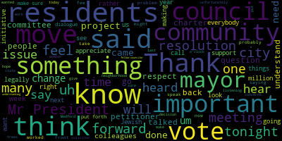
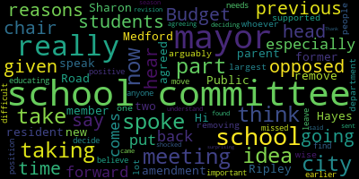

AI-generated transcript of City Council Meeting 04-08-25
English | español | português | 中国人 | kreyol ayisyen | tiếng việt | ខ្មែរ | русский | عربي | 한국인
Back to all transcripts
Heatmap of speakers
[Bears]: City Council seventh regular meeting April 8 2025 is called to order Mr. please call the role.
[Adam Hurtubise]: Council Callahan. President. Vice President Collins Council Lazzaro present. Council Leming.
[Bears]: Councilor Scarpelli, Councilor Tseng, President Bears present seven present non absent, the meeting is called order please rise to salute the flag. Announcements accolades remembrances reports and records records the records of the meeting of March 25 2025 were passed to Councilor Callahan Councilor Callahan how did you find those records. I found them in order and I move to approve on the motion of Councilor Callahan to approve the record seconded by seconded by Vice President Collins, Mr. Clerk, please call the role.
[Adam Hurtubise]: Vice President Collins, Councilor Lazzaro.
[NqJnNNyD4Uw_SPEAKER_06]: Yes.
[Adam Hurtubise]: Councilor Leming. Yes. Councilor Scarpelli. Yes. Councilor Tseng. Yes. President Bears.
[Bears]: Yes. I'm in the affirmative, none in the negative. The motion passes. Reports of committees. Is there a motion to join and approve? On the motion of Vice President Collins to join and approve, seconded by. Seconded by Councilor Leming. And I will go to Council Vice President Collins. on 24-033 planning and permitting committee report. Oh, sorry.
[Collins]: Thank you, President Bears. The planning and permitting committee on March 26th met to discuss two additional topics that are part of our comprehensive citywide zoning overhaul. The topics discussed at this meeting was the first topic meeting for the Medford Square zoning proposal And I believe our second look at updates to the ADU's ordinance, we will meet on both of these topics again before they are reported out of committee and referred to the Community Development Board for public hearings. Motion to approve.
[Bears]: Great. 22-379 and 22-453, Council Lazzaro, Public Health and Community Safety Committee, April 1st.
Council Lazzaro.
[Lazzaro]: Thank you. At this meeting, those two papers are joined into one ordinance. And tonight we will be discussing the gender affirming care and reproductive health care ordinance, which was voted out of that committee to the regular meeting.
[Bears]: Thank you, Councilor Lazzaro. 24-069, 24-354 and 25-041 offered by Councilor Leming.
Resident Services and Public Engagement Committee, April 2nd, 2025. Councilor Leming.
[Leming]: Thank you, Council President Bears. We discussed increased public outreach for the budget process and that involved a, we passed a motion to collect feedback for a budget survey, which will be meeting on to approve at the next Resident Services and Public Engagement Committee Uh, next week we had the human rights commission ordinance on the agenda, but decided to, uh, it needed more time for Councilor Tseng to work on it with the mayor. So, uh, put it off until the next, until next month. And we worked on and released, uh, the city council newsletter. Thank you to councilor Callahan for drafting that.
[Bears]: Thank you, Councilor Leming. On the motion to join and approve the committee reports, any further discussion by members of the Council? Seeing none, there is a hand raised on Zoom. Sharon's iPhone, if you could just rename yourself to add your last name and then I'll unmute you and you'll have three minutes to discuss this paper. All right, the hand went down on the motion was for please call the roll.
[Adam Hurtubise]: Yes. Vice President Collins. Yes. Yes. Yes. Yes. Yes. Thank you. I have motion to suspend the rules to take papers 2550 2551 and 2552 out of order.
[Bears]: Great, can we take 52 first? Yes. Great. On the motion of Vice President Collins to take papers 2052, 2050, and 2051, seconded by. Seconded by Councilor Leming. Mr. Clerk, please call the roll.
[Adam Hurtubise]: Councilor Callahan? Yes. Vice President Collins? Yes. Councilor Lazzaro?
[NqJnNNyD4Uw_SPEAKER_06]: Yes.
[Adam Hurtubise]: Councilor Leming? Yes. Councilor Scarpelli?
[Bears]: We're, we're in the middle of a roll call. We could make a motion. Yep.
[Adam Hurtubise]: Councilor Tseng. President Bears.
[Bears]: Yes, I mean affirmative no negative motion passes. 25052 submitted by the Elections Commission 2025 Medford election calendar nomination papers available Tuesday, June 10 last day an hour to pick up nomination papers Friday, July 25. Last day an hour to submit nomination papers July 29 host list of candidates, August 13 last day to object to nominations or withdraw Thursday August 14 ballot position drawing for preliminary municipal election if necessary Friday August 15 last day to register for vote to vote for September municipal preliminary Friday September 5. Last day and hour to apply to vote early for September preliminary election, September 9th, Tuesday, September 9th. In-person early voting from Saturday, September 6th through Friday, September 12th. The September municipal preliminary, Tuesday, September 16th. Last day and hour to file for a recount for the preliminary, Monday, September 22nd. Last day to register to vote for November municipal election, Friday, October 24th. in-person early voting for November Municipal Election, Saturday, October 25th through Friday, October 31st. Last day to apply to vote early by mail, Tuesday, October 28th. November Municipal Election, Tuesday, November 4th, 2025. And last day and hour for a candidate to file a recount petition for the November election, Friday, November 14th. And with that, I'll recognize the Chair and members of the Elections Commission.
[Henry Miller]: Chairman Warren. Good evening, Council. We're trying to run. It's a little too late. We should have get that to you by last month, but you know, the timing was off. So we make sure we get it done before. It's a little too late. There's a lot to do. Right. Do we have any question from the council on the date? Because apparently, technically, we verbally, we share with you, with the council, that we were going to help, if necessary, the preliminary on September 9th. But we run into a legal issue with the state. And on it, we had to push it from the 9th to the 16th. So if there will be a primary, a preliminary, hopefully no. OK. That's the only change. Everything else is the same. One of the key thing we tried to do this year because we had previous issues, the fact we give the city a full week of early voting. We're trying to make everybody happy so that there's no excuse not to vote in this cycle.
[Bears]: All right. Any questions by members of the council on the proposed election calendar? Is there a motion? On the motion to approve by Councilor Leming seconded by seconded by Councilor Tseng Mr. Clerk, please call the roll.
[Adam Hurtubise]: That's a call him.
[NqJnNNyD4Uw_SPEAKER_06]: Yes.
[Adam Hurtubise]: Vice President Collins.
[NqJnNNyD4Uw_SPEAKER_06]: Yes.
[Adam Hurtubise]: That's a lemon. That's a scrub Kelly.
[Bears]: That's a saying President Bears yes 70 affirmative no negative emotion passes. Thank you. Thank you. Good luck. 25-050 submitted by Mayor Breanna Lungo-Koehn, loan order 25,775,000 school HVAC infrastructure and roof bonds supplemental. Dear President Bears and members of the city council, I respectfully request and recommend that your honorable body approve the loan order below, which is in addition to the 5 million loan order that appeared before the council at its December 17th, 2024 meeting. Be it ordered that 25,775,000 $1,000 is appropriated for the purposes of replacing boilers and cooling systems with new condensing boilers and heat pumps including associated automated controlled structural and architectural work, electrical work, and weatherization at the McGlynn School and Andrews School and the acquisition and installation of solar panels and a new roof or roof repairs at the McGlynn school, including the cost of planning, design, architectural and engineering services and all incidental other costs incidental and related there too. And I'll leave it at that and I will go to our climate planner Brenda Pike and the assistant superintendent Peter Cushing.
[Peter Cushing]: Good evening. Thank you very much for having us here this evening to give you an update on the project. This evening, as Council President mentioned, here with Brenda Pike, also Tom Ellis, Josh Doolittle. Tom is from JLL, our owner's project manager. Josh is from our designer B2Q, and Alicia Hunt from the city's Office of Sustainability is also here with us this evening. As we've previously presented. This is a comprehensive project to replace and update the HVAC and heating ventilation air conditioning systems at the McGlynn in the Andrews with modern systems the buildings as mentioned previously are approaching 25 years old. The building systems have expended their useful life. At present, we have previously been here for $5 million for pre purchase of equipment that pre purchase of equipment actually went through this past Friday. There was Herculean effort done by all parties involved including the city's procurement office, mayor's office, and vice chair of the school committee. So really appreciate everybody who has really made this project happen. It's definitely a sprint to make sure that we get these systems installed prior to students arriving as best as possible at the end of August. So phase one pre-construction involved $5 million and we appreciate that bond. Of that was equipment pre-purchase of $3.3 million and numerous other costs that you can see on the screen. construction for this project as we enter phase two is estimated to be $22,945,000 with contingency costs of $687,273 for owner contingency. Designer through construction to finish the project for B2Q is $1.3 million. Our owner's project manager, $484,000. And other contingencies not considered in the GMP. GMP stands for gross maximum price. That means that our costs will not exceed the gross maximum price when we're using construction management at risk. The construction manager, Consigli, has been brought on early in the design process so that they can be involved in making sure that we have a complete package ready to be installed, ordered and installed for our schools.
[Brenda Pike]: Yeah, I just wanted to talk a little bit about some of these other costs that we have on here, which include $500,000 for commissioning the systems once they're installed. We have in here 619,000 for ADA upgrades that were triggered by a project of this size. I want to note here that there's an additional 2.3 million in ADA upgrades that were identified through this process. Because of changes in ADA requirements from when the building was built to now, based on the consultant's experience, they expect that we can get variances for those because while the $619,000 that we have here is for things that are are that are considered we consider very beneficial, or not too costly beneficial like fixing the entrance to the McGlynn so that there's no lip there that that wheelchairs can't get over for instance, the that additional 2.3 million are for things that are changes that are have very relatively small benefits, but relatively high costs. So for instance, moving a sink up one inch and all the associated plumbing and tiling and other costs along with that. So we're going through that variance process in April and May. I'll note here the IT rooms, we now have just the IT rooms for the Anders and McGlynn listed here. The other three schools IT room equipment will be done through the school budget. We have the McGlynn roof refurbishment at $1.5 million instead of a $3 million replacement there. The warranty is roughly the same and would still allow for moving forward with solar if we decide that we want to do that. And then I also want to point out that we are expecting about $2.2 million in mass save incentives for this project but those are reimbursable. So, we've, we have to authorize the spending and buy the equipment and install them. before getting those rebates back some months later. So that amount is not included in the 25 or that amount is not subtracted from that $25 million bond because we do need to have that to spend that up front. But we do expect that long term, we won't be paying that off for a long period of time. And then I would add that we have solar on here as an add alternate. That's not included in the above cost. We had just been considering it if we were able to do it cheaper through this process than we otherwise would be able to. And it's still a possibility if the project comes in under the expected cost, but it's not included right now. project could very well come in under the this expected cost here, because we do have some very healthy contingencies built in, not just that owner contingency and the construction contingencies. But we also have over $2 million in contingencies for possible tariffs and possible second shift work if the project is delayed. And so we need to do a lot of second shift work in order to make up the schedule. So we're hoping that that won't need to be dug into too much. But it's there so that we don't have to come back to you a third time.
[Peter Cushing]: We are being very proactive, though, in making sure that this project is being well managed, well run. Our OPM is being really on the ball with us and the construction management designer as well to make sure that we are well prepared when we hit the summer. We've already worked internally as a school to make sure that all summer programming has been redistributed throughout the district to other buildings. And we are making efforts to make sure that if any office staff need to be moved as well, they'll be able to be moved during the summer as well. Just one more slide for the final. So you can see the total costs brought in and our hopes that $30,111,000 number does include healthy contingencies that we plan to be very hawkish on and preserve as much of that as possible for the City of Medford.
[Bears]: Thank you. And this is our third time I think seeing this project. If you could, could you just discuss any thing that's changed since the first two presentations that we received and then I can go. I'm sure a lot of small things have changed. You can keep it to the bigger things. And then I'll go to Vice President Collins and Councilor Scarpelli.
[Peter Cushing]: I would say the two most significant changes. We were planning to do some mechanical installations in the building for cost savings and preventing workers from being in the buildings we've moved a lot of the equipment to rooftop rooftop units. I'm just turning to my team to confirm. I have a lot of other things besides the HVAC. So as the assistant superintendent, but this is definitely the biggest project right now. So that's a major piece. I would say the second major piece is the ADA upgrades. If I'm going to be honest, we, these buildings were built in 2001, and open to students in 2001, that is well after the Americans with Disabilities Act was passed, but codes have changed over the years. All right. So, I would say that and just so everyone is clear, when a project. exceeds 30% of the assessed value of the buildings and the assessed value of these buildings in the city of Medford is approximately $69, $70 million. So once you exceed 30%, it requires a full review of the entire structure for ADA compliance. So I'd say those are the two biggest things in my book that have changed.
[Brenda Pike]: Yeah, and then I would say in terms of the budget the base, the difference would be that the tariff contingency and the second shift premium contingency. I think the budget is. about a million dollars higher than what we had anticipated it would be the last time that we came here. And that's entirely because the additional contingencies that we built in there.
[Peter Cushing]: There is Council President. One more thing to when I had entered this project I had fully expected for us to go for a new roof, a soup to nuts new roof. because the added R value insulation of a new roof following the 2011 building codes of Massachusetts, I expected to have considerable savings. The new roof would cost approximately $3 million all in new roofing materials, EPDM, and the insulation plus the labor. The reality is, okay, that we get the same Warranty as a fluid applied solution that was done to the Andrews roof so we get a 20 year life expectancy. we would only see approximately $300,000 of savings from the new installation. So we would be spending $1.2 million to get essentially the same outcome. So a restoration is not only the most fiscally responsible, but it achieves the same end as a new roof.
[Bears]: Thank you. Go to Vice President Collins.
[Collins]: Thank you. I wanted to thank you again for coming before us to again, describe this project. For folks who weren't at the previous presentations that the city council received on this, just to quickly paraphrase the overview that you gave, my understanding is this is to support the urgent and necessary HVAC repairs and roof repairs so that when kids go back to school in the fall, they'll have functioning air conditioning. and non-leaky roofs to enjoy at the start of the new school year. Very glad that we can support that. I'm so glad to hear. Obviously, taking on a major capital expense is not something that any of us take lightly, but I'm glad that this project is one whose scale enables us to do those ADA upgrades that I know people in the community have been asking for a long time. Thank you for your diligence around that as well. I appreciate all of the documentation for continuing to keep the council abreast of this and I would motion to approve.
[Bears]: Thanks. We have a motion to approve from Vice President Collins, seconded by. seconded by Councilor Tseng and we'll go to Councilor Scarpelli.
[Scarpelli]: Thank you, Council President. I know that it's not not you two but Mr. Dickinson's here. Did we entertain by any chance using any of the 28 million dollars in free cash now that we see is that that number came out a few weeks ago that we have in excess of 28 million and in the past we've shown that we've actively actively worked by moving that money into capital projects to possibly speed things up and then take some future costs to our citizens away, if that helps. I'm not qualified to speak to that.
[Bob Dickinson]: We will be looking at all different ways to finance this project. Obviously, there's a lot of it that absolutely... Okay, once again. Obviously this has to be done. When I'm looking at it, I'm looking at how much the interest in principal cost will affect the budget going forward right now, five, six years. It does put, if we borrow this full sum of money, it would put a big damper on the budget in 2028 and 2029 given the increase we would get through Prop 2.5 and new growth and what debt is actually coming off of our debt schedule, our waterfall schedule. So yes, we will probably be looking hard at not only using free cash to fund some of this to see how we can fit everything into the budget, but also the timing of the borrowings and when we will actually have to start paying principal and interest on the full general obligation bond.
[Scarpelli]: So that's good to know. Like I said, I didn't expect to use all $28 million and get this project done. But I know that since we have $20 million and we need to move quickly with this project, I appreciate the fact that we're looking into it. So thank you.
[Bob Dickinson]: No, we're looking at this very carefully.
[Scarpelli]: Thank you.
[Bears]: Thank you. Any further discussion by members of the council? Seeing none, we have a motion from Vice President Collins, seconded by Councilor Tseng to approve for first reading. Is there any discussion by members of the public either in person or on Zoom? If you're here in person, you can step up to the podium or you can raise your hand on Zoom. Seeing none, Mr. Clerk, please call the roll.
[Adam Hurtubise]: Councilor Callahan? Yes. Vice President Collins? Yes. Yes. Yes. Yes. Yes. Yes. Yes.
[NqJnNNyD4Uw_SPEAKER_06]: Yes.
[Bears]: Dear President Bears and members of the Council on behalf of the CPC I respect the request and recommend your Honorable body approve the following recommendation of the Community Preservation Committee $11,000 from the CPA General Reserve to the Winthrop Street Garden Commission for pergola installation at the Winthrop Street Gardens and it will go to manager to.
[Theresa Dupont]: Everyone. I'm Teresa DuPont. I'm the CPA manager, Community Preservation Act manager here for the city. I'm joined by Georgiana Chevre, who is the Winthrop Street Garden coordinator. Nailed it. Um we are before you tonight asking for an appropriation of $11, 000 from our Open Space Recreation Reserve to fund a shade structure or pergola project at Winthrop Street. It's something that has been environmentally reviewed and approved from all the various city bodies and we look for your support in this project. Happy to answer any questions.
[Bears]: Thank you. Anything you want to add, Georgiana? No. Alright, cool. Um any Seeing none, do we have any questions from members of the public, either in person or on Zoom? Also seeing none, is there a motion on the motion of Vice President Collins to approve, seconded by? Seconded by Councilor Tseng. Mr. Clerk, please call the roll.
[Adam Hurtubise]: Councilor Callahan? Yes. Vice President Collins? Yes. Councilor Lazzaro? Yes. Councilor Leming? Yes. Councilor Scarpelli? Councilor Tseng, President Bears.
[Bears]: Yes, I have the affirmative, none the negative, the motion passes. Thank you.
[Theresa Dupont]: Thank you very much, Councilors.
[Bears]: Could we, we do have clear channel here, could we take it quickly and then go? All right. I'm gonna go to paper 25036, hearings, petition to amend the special permit. Notice of a public hearing, City of Medford, City Clerk's Office, Medford City Council will conduct a public hearing on April 8th 2025 at 7pm in the Howard F. Alden Chamber, second floor, Medford City Hall at 85 George P. Hassett Drive, Medford, Massachusetts, relative to an amendment requested by Clear Channel Outdoor on behalf of the property located at 282 Mystic Ave, Medford, Massachusetts, 02155. Petitioner is seeking an amendment to the previously granted special permit. The petitioner is seeking the amendment to upgrade and replace two digital screens on the signboard located at the property and to ask for a review and potential adjustment slash reduction in the permit fee. Copy of the full text of the requested amendment can be viewed in the office of the city clerk room one or three Medford City Hall. Please call the Medford city clerk's office at 781-393-2425 for any aids and accommodations by order of the many Medford City Council signed Adam I'll her to be a city clerk. So I'm going to open the public hearing. And I'll go to Councilor Scarpelli and then we can hear from the petitioner.
[Scarpelli]: Thank you, Mr. President. And is the petitioner here?
[Bears]: I think that we do have the petitioner present.
[Scarpelli]: I think it's important that we can hear from him, but I know that there are some questions we have that we might have legally that we can't answer tonight, but I'd like to hear from the petitioner if we can.
[Bears]: Mr. President, you should be able to turn on your video now if you so choose.
[Mike Morello]: Good evening. Could you hear me?
[Bears]: We can hear you. Could we have your name and address for the record, please?
[Mike Morello]: Mike Morello, Clare Channel Outdoor, 89 Maple Street, Stone O'Mass.
[Bears]: Great, so we'd like to hear a bit more about the petition, what you're requesting, and then we will discuss it.
[Mike Morello]: Yeah, so as you may know, back in 2013, we installed a back-to-back digital billboard, 282 Mystic Ave, and at such time, the digital screens have outlived their useful life, and they're antiquated, so we're simply asking to amend the existing special permit just to simply replace the existing digital screens.
[Bears]: All right. It also says that there's a request to reduce the fee. Do you have any comment on that?
[Mike Morello]: Yes. So a couple of years ago, I believe at 262, Mr. Gaff, we replaced the digital screens on that unit. And I believe the permit fee was approximately $5,400. And I'm not sure if anything's changed with the current bylaws when it comes to the price on permitting. this permit is a little over $24,000. So I'm not sure what the huge difference was there. So I have a question on that.
[Bears]: Sure. Um, I can't say that we have been a lot of the city's fees have not been updated in a very long time. It's very likely that the building department may have updated them to reflect the times. But I'm going to Councilor Scarpelli.
[Scarpelli]: If I could, Mr. President, I think that, uh, the first issue with changing of the signs, I understand it gets The systems are antiquated we need to move forward as long as there aren't any huge changes that would disrupt our residents, I don't think it's a problem but again. both with this and with the adjusting the fee. I think if we could probably table this to the next meeting and get some updates, and then I don't see that the changeover will be a big issue. And if we can look into seeing what the qualifications or the protocol for the fee structure, and then maybe you can go from there. But right now, I don't think we're equipped to vote on that this evening, Mr. President. I appreciate the petitioner being here, petitioner speaking on behalf, but if we could table this to the next meeting, that'd be super important, Mr. President.
[Bears]: And Councilor Stroud, just to clarify the motion, if the petitioner wanted to move forward tonight without changing the fee, would you be comfortable with that or do you think
[Scarpelli]: I would feel comfortable. I just like I said, I don't see the any of the particulars in front of me.
[Bears]: Right.
[Scarpelli]: All I'm hearing is a petitioner saying that just changing it. Okay. And I, we, unfortunately, I don't have anything in front that might cause some problems legally for us.
[Bears]: All right, so there's a motion to table. to the next regular meeting, actually motion to continue the public hearing to the next regular meeting and request an update on the application and the fee from the building department and also to request legal to give us an opinion on whether or not we can reduce the fee. When you have that, Mr. Clerk, let me know. All right, so there's a motion to continue the public hearing to the April 29 meeting by Councilor Scarpelli, seconded by Councilor Tseng. Any further discussion? Seeing none.
[Callahan]: On Zoom.
[Bears]: Oh, sorry, Councilor Callahan.
[Callahan]: Yeah, I just want to make sure that we're not sending stuff to legal that we don't need to send to legal. My understanding from the building commissioner is that on that we are the appropriate body to make appeals and final decisions when it has already gone through the building department on things like signs. So. I'm not positive it doesn't need to go to legal, but I think we should not just send everything to legal just to send things to legal.
[Bears]: Thank you, Councilor Callahan. Councilor Scarpelli.
[Scarpelli]: Out of all due respect, this is the fourth time I've asked something that I feel important that might put our committee in question legally. to go to legal and this councilor has refused a question to every single one and i find this to be a problem this is very easy if we had a city solicitor i'm the i'm the eldest uh i'm i've sat in a seat longer than anybody here i've been here when we've had an active city solicitor that i could call any time to answer any questions so we can move an issue forward unfortunately this is year four without a city solicitor So if one member of this council, out of due respect, if it was my fellow council, the same question, I wouldn't stop that. So this is an issue that if we move something forward and legally comes back on us, I'd rather not pay the consequences with a higher fee or a lawsuit. Thank you, Mr. President.
[Bears]: Thank you, Councilor Scarpelli. Any further comment by members of the council? Seeing none, there's a motion to continue to April 29th and request those answers from the building department and the legal department. Any discussion by members of the public? Seeing none, Mr. Clerk, please call the roll.
[NqJnNNyD4Uw_SPEAKER_06]: Yes.
[Adam Hurtubise]: Yes. Yes. Yes. Yes. Thank you. I was approached by a few members of the charter review committee that have spent
[Scarpelli]: many, many years and a lot of effort. I will not say what they said because they're going to get really tired soon, but they asked if we could please hear Resolution 24-468 submitted by the Mayor, draft City Charter, returned to City Council.
[Bears]: On the motion, Mr. President, Councilor Tseng. You should be good.
[Tseng]: Oh, okay. I'm happy to take that out of order but I do know a lot of people here for 25-053 the gender affirming care reproductive health care ordinance 25-055 the resolution to support the release of remains. And 25-057, the resolution to create and distribute Know Your Rights information. As those items came first in the agenda and are shorter, what I presume are shorter items to discuss, would you entertain taking those first before the City Charter conversation? Councilor Scarpello.
[Scarpelli]: No, I owe the respect to my fellow councilor. We've started resolutions that thought would be quick and lasted 45 to one hour. As I said, residents that are on the charter committee that said that, unfortunately, they can't stay later. These are people that have worked in this community on this project for many, many years. I would hope we give them the respect to move them to the front so we could hear them, so they could be off and whatever the resolution ends up to be, that they can be heard and then move on to their evening. And from what I hear, most of them to sleep. So thank you.
[Tseng]: I think you can make the same arguments the other way, given that this ordinance has also been- So don't vote for it.
[Scarpelli]: That's my motion. Don't vote for it.
[Bears]: There's a motion on the floor by Councilor Scarapelli to suspend the rules to take paper 24-468. Does that motion have a second? Is there another motion on the floor?
[Tseng]: I would motion to take 25-053, 25-055, 25-057, and then 24-468. On the motion of Councilor Tseng to take papers 25053, 25-055, 25-057, and 24-468. Is there a second? On the second by Vice President Collins.
[Bears]: Is there any further discussion? On the motion, Mr. Clerk, please call the roll.
[Adam Hurtubise]: Councilor Callahan.
[NqJnNNyD4Uw_SPEAKER_06]: Yes.
[Adam Hurtubise]: Vice President Collins? Yes. Councilor Lazzaro?
[NqJnNNyD4Uw_SPEAKER_06]: Yes.
[Adam Hurtubise]: Councilor Leming? Yes. Councilor Scarpelli? Yes. Councilor Tseng?
[Bears]: Yes.
[Adam Hurtubise]: President Pears?
[Bears]: Yes. I have the affirmative, none the negative. The motion passes. 25053 offered by Councilor Tseng, gender affirming care and reproductive health care ordinance. I could read the full ordinance, but is there a motion to waive the reading in lieu of a summary by the petitioner? So moved. On the motion by Councilor Tseng, seconded by? Seconded by Councilor Collins, Mr. Clerk, please call the roll.
[Adam Hurtubise]: Yes. Vice President Collins. That's a lemon. Yeah, that's just compelling. Yes.
[Tseng]: Yes, I'm the affirmative, negative, the motion passes, Councilor say, Thank you, Mr. President, um, as we, as, as we know from watching the news and from paying attention to, you know, our neighbors concerns over the last few years. The access to gender affirming care and reproductive health care has become an incredibly contentious issue in our country, despite these being basic forms of medical care and basic rights that individuals have, or should have in this country, and has have historically had in this country until recently. A lot of our residents are fairly asking us how we can best protect our own neighbors best protect our own residents and provide the security that they need and need for. for enjoying their lives here in Medford. This ordinance would protect medical providers and people who seek that care from out-of-state arrest warrants and prosecutions, from out-of-state attempts to apply laws that aren't Massachusetts laws, laws that aren't Massachusetts values to Medford. We've heard early on in the process years ago that if we didn't pass something like this, it was very likely, if not mandatory, that we would have to carry out those warrants. Now the situation at the state level has changed, but it is important for us to reaffirm this and to acknowledge that just because state law says something doesn't mean that we can't back that up as well, and that we need that additional layer of protection for our residents. During the process, Councilor Lazzaro and I worked hard to invite stakeholders, including medical providers in the community, including residents with experience, including city staff across the health police departments and the administration to work on this. We know that Medford faces limited resources. We've talked about that over and over again. We want to make sure that those resources aren't expended to the end of denying any individual's right to their bodily autonomy or to criminalize any person's effort to live as their full and authentic self. This ordinance, if you walk through it, essentially protects the information, the health information of people who come to Medford to use our care. It protects health information from medical providers as well. It affirms our city's policy and enshrines into law that we won't treat any individual differently based on their gender identity or gender expression. It follows state laws language with regards to definitions with regards to how we're going to do what I just described. It also empowers our city to to provide fair access to reproductive health and gender affirming healthcare information. Because we know that there are predatory sources out there that are putting limited or fake information out into the community. This empowers our administration to post proper guidelines, to post a full comprehensive picture as to that information on the website. I know there are residents who want to speak. I know there are councilors who've worked hard on this. I do also want to thank councilors Collins, Bears, and former councilor Morell for introducing parts of this ordinance as well, or a resolution language to support this ordinance. Thank you.
[Bears]: Thank you, councilor Sagan. Is there a further discussion by members of the council? Council Vice President Tom.
[Collins]: Thank you, President Bears. I just want to share my gratitude for this Councilors for the sponsors for shepherding through this draft which strongly and boldly defines protections for seekers of gender affirming and reproductive health care in Medford. This draft has gone through a careful legal review, and its sponsors, Councilors Sang and Lazzaro, made sure it was in alignment with other communities and with state law. And I want to highlight that this is protective of the whole city because it guarantees that if the federal government decides to pick a fight over cities allowing unfettered access to health care, then we won't be fighting that battle alone. We'll be going in as part of a regional and statewide cavalry. We are in a moment where the federal government is attacking women's access to health care and trans and non-binary people's access to health care in a deliberate attempt to punish political enemies and create a distraction from this administration's catastrophic economic agenda. They're making a goal of actively making Americans' lives worse. And I'm very grateful for this leadership to do what we can on the city level to say that won't happen here. So I want to extend my gratitude to the sponsors and also to the residents who held this council to account for making this ordinance happen.
[Bears]: Thank you. Councilor Lazzaro.
[Lazzaro]: Thank you. I just wanted to also extend my gratitude to Councilor Tseng, Councilor Morell, President Bears, and the city's legal team, KP Law, for helping us review the ordinance and align it with state law. And this draft, I think, is the strongest we can make it. So I think we're really in a position to protect our residents to the best of our ability. And I'm proud of how far we've taken it. So thank you.
[Bears]: Thank you. Any further discussions by members of the council? Seeing none, is there any discussion by members of the public? either in person or on Zoom. I'm gonna go to Mike Denton on Zoom. Mike, you have three minutes. And I just wanna remind everyone, you can provide your name and address when you speak, or you can provide that information. You don't have to provide your name, but you can provide your address privately to the clerk if you'd like to do that. by email at ahertabaseatmedfordma.org. Mike, give me one second to get the timer going. All right, Mike, go ahead.
[Mike Denton]: All right, thank you. Thank you to Councilor Collins for saying everything that I was coming here to say. So I'd just like to reiterate that as a business owner who serves a wide swath of the community that would be directly impacted by this ordinance, thank you, thank you, thank you. And I think the only other thing that I wanted to say is that this is the kind of ordinance that will go a long way to making sure that people who live in Medford know that Medford cares about them and that there's a degree of safety that they're going to work towards for on their behalf. So thank you for this. Medford sees you and appreciates you and that, well, the slice of Medford that I'm exposed to sees you and appreciate it too. So that's all.
[Bears]: Thank you, Mike. We'll go to the podium. Name and address. For the record, you have three minutes.
[Nicholas Giurleo]: Good evening. Nick Troleo, 40 Robinson Road. I was originally going to comment on the substance of this motion and just express some opinions about why I think it's overbroad and doesn't really do anything. I'm very frustrated with what procedurally happened leading up to this taking of this motion or this resolution, sorry, discussion of the ordinance out of order. I think it's really, really shameful that this Council would not second Councilor Scarpelli's motion to take the city charter resolution out of order and discuss that first. We're prioritizing here an ordinance on gender identity over our city charter, our constitutional foundational government, the changes in the city charter are going to significantly impact how elected officials are elected in Medford. So the fact that we would just not even second the motion and not even be courageous enough to vote no on it really is shameful. So I think everyone in this council who did that should be ashamed of themselves. Thank you.
[Bears]: Thank you. Any further discussion on the ordinance? Seeing none. Is there a motion on the floor?
[Unidentified]: Motion to approve.
[Bears]: Motion to approve for first reading by Councilor Tseng, seconded by? Seconded by Vice President Collins. Mr. Clerk, please call the roll.
[Adam Hurtubise]: Council Callahan.
[NqJnNNyD4Uw_SPEAKER_06]: Yes.
[Adam Hurtubise]: Vice President Collins. That's a little Zorro.
[NqJnNNyD4Uw_SPEAKER_06]: Yes.
[Adam Hurtubise]: That's a lemon. I'll just go Kelly. I was just saying, President Bears.
[Bears]: Yes, 77 affirmative. Yes. None of the negative motion passes for first reading. 25-055 resolution to support the release of Ramesa Ozturk council is our own president bears whereas Ramesa Ozturk was an international student with a legal student visa at Tufts University in Medford and whereas Ramesa Ozturk student visa was canceled because she co-wrote an op-ed in 2024 and the Tufts University student newspaper that was critical of the Tufts administration's refusal to acknowledge and stand against the ongoing genocide in Gaza and
whereas the Constitution protects everyone in the United States regardless of immigration status, and whereas the First Amendment of the Constitution protects the rights to freedom of speech, assembly, and to petition the government, and where it's clear that Ms. Öztürk's visa was canceled because of political speech, which is a violation of the First Amendment of the Constitution. and where it is the obligation of our local, state, and federal government to uphold and protect the rights of our residents, permanent and temporary, all of whom are protected by the United States Constitution. Now, therefore, be it resolved that the Medford City Council condemns the abduction of Hermesa Ozturk by Immigration and Customs Enforcement as unlawful punishment for political speech, and acknowledges and condemns that Ramesa Osterk is a political prisoner, be it further resolved that the Medford City Council calls for the release of Ramesa Osterk immediately, so that she may resume her studies of child development at Tufts University and her peaceful residence in Somerville. Be it further resolved that the Medford City Council requests an update from Tufts University on the specific policies to protect their students, faculty, and staff from similar abductions by ICE in the future, and to protect their community's right to exercise freedom of speech, assembly, and to petition the government. Be it further resolved that the Medford City Council requests that our partners in local government and our state and federal delegations speak out publicly against the unlawful arrest of a student in our community in violation of her due process rights and in violation of the United States Constitution. Council Dizaro.
[Lazzaro]: Thank you. I found myself very upset when I saw the video of Ms. Ozturk being taken by ICE officers from her home in Somerville. I'm very familiar with where she lives. A close friend of mine lives on that street. And I've been there many times. It's a safe neighborhood. It makes me feel, it made me feel very afraid. And as a local elected official, I felt that there wasn't much that I could do except for craft a resolution stating publicly the things that I felt were most egregious about what happened, which were that the Constitution was violated and the rule of law was ignored by our federal government. I wanted to point that out, I wanted to do it here, and I wanted to make sure that we had a forum where our residents can understand that their city government feels strongly that that's not okay, it's not what we believe in, and we do not think that this is something that we can let continue to happen. in any capacity. This is what we have access to as city councillors, this is what we're able, this is our forum to be able to say something, so I thought it was appropriate to say something here. I did reach out to Tufts University, our contact at Tufts as city councillors is Rocco DiRico, he is the Government Affairs connector, person, he is a great person to speak with in times like this. And he did give me a couple of statements. He sent me an email, I'd like to read just about what they, I mean, we spoke on the phone, he sent me a statement, and then he also updated me with the Tufts president's statement that also, it was posted online, so some people may have seen it, but I would also like to read that here because I feel that it does respond It is kind of the response that I call for in the resolution. So I feel that even beyond what I'm going to read, I think that Tufts has been really active in responding to this. They've done things that you can't really talk about publicly because they've really tried to do everything in their power to have Remesa released. And the administration at the federal level really doesn't always listen, even though people in power are really doing what they can to try to access humanity. anybody's humanity. So Rocco's response to me was the university recognizes how frightening the situation is for her, her family and the larger community here at Tufts, especially our international students, staff and faculty who may be feeling vulnerable or unsettled by these events. We are in touch with local, state, and federal elected officials and hope that Rumeysa has provided the opportunity to avail herself of her due process rights. The university is actively working to support the Tufts community as it mobilizes its collective resources and contacts to ensure our students' safety and well-being. The university has sent emails to all our students, faculty, and staff to outline our protocol for engaging with government officials, recommendations for documentation, and support resources. We encourage our students, faculty, and staff to contact the International Center for additional support and resources." And then he added in a later email, we're also working with Rameses' attorneys. And there was also, I will also read, The Declaration of Tufts University from President Sunil Kumar. Tufts University, an entity legally known as the Trustees of Tufts College and henceforth referred to as Tufts University, the university or Tufts declares as follows. One, on Tuesday, March 25, 2025, the university learned that Rumeysa Ozturk, a Tufts doctoral student from Turkey, was taken into custody by the Department of Homeland Security as she was leaving her off-campus apartment in Somerville, Massachusetts. The university understands that she was leaving her home that evening for an iftar dinner hosted at the Tufts Interfaith Center, where she would break her Ramadan fast for the day. Two, at around 6.30pm that evening, the Tufts University Police Department received courtesy notification from the Somerville Police Department that an individual had been detained by federal authorities and that the person in custody might be a Tufts student. We confirmed through our records that the person in question was Ramesa Ozturk. Three, at 7.32 p.m., Ms. Ozturk's record in the Student and Exchange Visitor Information System, SEVIS, was updated to note that her visa was terminated. Prior to that, and at the time of her detention, Ms. Ozturk was in, quote, good immigration standing, according to her record in SEVIS, and both Ms. Ozturk and Tufts had followed the governing regulations for students on visas. The university then received a notice dated March 25, 2025, and received via email on March 26, 2025, at 10.31 a.m., stating that Rameza's visa was canceled because she was a non-immigrant status violator, citing 237A1CI of the Immigration and Naturalization Act, and or that the United States believes that her presence in the country would result in, quote, potentially serious adverse foreign policy consequences for the United States. With her consent, the university can confirm that Ms. Ozturk is a third-year doctoral student in good academic and administrative standing. Her research focuses on how young adults can use social media in positive, pro-social ways, and she is described by her faculty as a hard-working student dedicated to her studies, and the Tufts community. The university has no information to support the allegations that she was engaged in activities at Tufts that warrant her arrest and detention. The university has seen an outpouring of support from Ms. Ozturk over the last week from Tufts students, faculty, and staff. These individuals have described Ms. Ozturk as a valued member of the community, dedicated to her academic pursuits, and committed to her colleagues. Five, the university can confirm that Ms. Ozturk was one of several authors of an opinion piece in the student newspaper, the Tufts Daily, published on March 26, 2024, entitled, Try Again, President Kumar, Renewing Calls for Tufts to Adopt March 4 TCU Senate Resolutions. The university declares that this opinion piece was not in violation of any Tufts policies. Further, no complaints were filed with the university or to our knowledge outside of the university about this op-ed. The university maintains that the op-ed was consistent with speech permitted by the Declaration on Freedom of Expression adopted by our trustees on November 7, 2009. For the record, a search on the Tufts Daily will reveal op-eds on multiple sides of the issue with opinions that were shared just as strongly as the op-ed Ms. Oster co-authored. The university has no further information suggesting that she has acted in a manner that would constitute a violation of the university's understanding of the Immigration and Naturalization Act. Six, our international students, faculty, and staff are vital to deliver on the education, teaching, research, and public service mission of Tufts University. University sponsors 1,818 continuing international students on F-1 visas alongside 569 alumni who are pursuing post-completion work authorization in the United States. 24 degree and non-degree students on J-1 visas. This is in addition to the broader community of students, faculty, and staff that hold various immigrant and non-immigrant statuses. Seven, the free movement of our international community members is therefore essential to the functioning of the university and serving our mission. The university has heard from students, faculty and staff who are foregoing opportunities to speak at international conferences and avoiding or postponing international travel. In the worst cases, many report being fearful of leaving their homes, even to attend and teach classes on campus. The university declares that many of these students will go on to make significant economic and intellectual contributions to the United States and in countries around the world. They will do so, by working in or building new companies through teaching and research and universities and other academic and healthcare institutions and through public service in the United States and across the globe. The university is confident in its exploration because thousands of Tufts University alumni have received their education while on F-1 visas and have gone on to make a positive impact. to the economic prosperity and intellectual success of the United States and in other countries. The undersigned submits this declaration on behalf of Tufts University in support of Ms. Azterk and asks that she receive the due process rights to which she is entitled. Based on everything we know and have shared here, the university seeks relief so that Ms. Azterk is released without delay so that she can return to complete her studies and finish her degree at Tufts University. And then it is signed. On behalf of the university, I understand declares under the penalty of perjury that the foregoing is true and correct executed on April 1 2025 at Tufts University Sunil Kumar president. I, I'm sorry that was so long. I just felt that it was important to articulate everything that was shared with me from Tufts. The important thing I think is that Tufts did give like a very, very thorough response. And I just feel very strongly that we declare that the Constitution was not followed. We still, Ramesa is still in Louisiana, and it's not right. And that's all. Thank you.
[Bears]: Thank you, Vice President Collins.
[Collins]: Thank you, President Bears. I want to thank yourself and Councilor Lazzaro for putting this together for this meeting's agenda. I just think this is a moment in which it's really, really important for city leaders and leaders at all levels to be vocal. We're in a really scary era where the federal government is using all sorts of strategies to try and actively make people more scared, more vulnerable, more unsafe. The goal of detentions like Ramesa's is to intimidate activists into hiding, to intimidate organizers into silence, to make non-citizens feel endangered, to make everyone afraid to speak up. And I would hate to see the city of Medford perpetuate that because it's not going to help us withstand this very insidious culture. So I'm very grateful to your leadership and putting this language forward. Thank you.
[Bears]: Thank you, Vice President Cohns. Councilor Leming.
[Leming]: I'd like to thank you as well for putting this forward. Scary and disgraceful that we're having federal authorities pick up students from the street, plainclothes officers, deporting them out of state so that they don't have access to legal representation. And in many other cases, even just putting them out of the country and ignoring court orders. just because they can. Elections have consequences, and this is what we're seeing because of the election. I mean, in other parts of the country, it's not... Ramesa Ozturk was a case that received a lot of publicity. I worked for five years as a postdoc at Mass General. I attempted Keyword attempted, didn't succeed to unionize over there, but ended up creating some groups that had a lot of postdocs on them. And a lot of them are international. And so they're coming up with a report. And so they're sharing reports of people they know, their friends just being randomly abducted, detained in places like Cambridge, Chelsea, Everett. Maldon. Last night, the Democratic City Committee met and decided to put some of the committee's own funding into purchasing 8,000 red cards, which are cards that you can give out to immigrants who may be at risk of being detained in order for them to understand their legal rights and understand how they can interact when federal authorities try to illegally detain them. In many cases, there have also been reports of just US citizens being detained because they're brown. And then ICE will only figure that out later. when they go through their wallet and figure out that they were just randomly abducted. And what's going on here is that ICE is basically just taking in anybody that they can, trying to figure out if there was ever any lapse in Visa or anything that they might have done technically wrong on a piece of paper, and then using that as an excuse to deport them all while ignoring court orders to the contrary, and then publicizing the few cases where they actually do manage to deport a violent criminal, and then using those few cases as justification for this policy. So, it is important, I agree for city leaders to speak up vocally because intimidation is a big part of this intimidation is the name of the game here that is a huge reason why this is happening. Independence at different levels of government can help to stop this, but understand that being vocal and vocally saying this isn't right is the best tool that we have to stop an authoritarian regime. So again, I would just like to thank my colleague for putting this forward. and I look forward to voting in favor of it and hearing whatever public comment we have.
[Tseng]: Thank you, Councilor Leming. Councilor Tseng. Thank you. I'll be brief because I think councilors have been very thorough with their comments. Thank you, President Bears and Councilor Lazzaro for introducing this resolution. I know a lot of residents have been clamoring for us to say something about it. and the timing of the regular meetings didn't allow us to make a statement earlier, but this is, it's helpful that we're doing it at the earliest possible opportunity for us. All I'll say is that this is a fearful time, and the freedom that we have to free speech and to our due process rights, which means not being deprived of our life, liberty, or property without a due process. These rights are sacred to who we are as Americans. They're sacred to democracy, and they form the bedrock of a strong society. And I think this really exemplifies what I've been saying for a very long time, which is that oftentimes the national can be local. And as the federal government seeks to interfere in people's everyday lives, seeks to interfere and retaliate against individuals for publishing their thoughts in an op-ed, be it something you agree with or disagree with, As the federal government tries to commandeer state and local governments into following its policies when federalism exists, and when we have powers delegated to us, to the voters, to hold local and state officials accountable for, this all matters to the rule of law. It all matters to who we are as Americans and our identity as well. I think passing a resolution like this tonight, you know, I wish we could do more, but this solidifies our intent as a city council to stand by our residents. Thank you. Thank you, Councilor Sagan.
[Bears]: Any further discussion by members of the council? Seeing none, we'll go to members of the public. I have two hands on Zoom or one hand just went down and we have someone in the chambers. We'll go to the podium first. Name and address for the record. You have three minutes.
[Nicholas Giurleo]: Hello again, Nick Traleo, Forty Robinson Road. Um I'd like to first just reiterate what I said in the earlier discussion about, you know, taking this resolution over resolution of the city charter. Again, concerning to me. But in terms of what happened to miss us Turk, I just like to offer a legal perspective given the lawyer and this is what I do for a living is think about legal problems. I think the issue is very narrow, to be honest with you, you know, because I think the legal questions really does a visa recipient. have that same right to freedom of speech as a citizen of the United States. And I'm not here to answer that question I mean it would require a great deal of research to try to understand what the law says on that subject. Ultimately, I think it's a question that judges have to decide and that's what's happening right it's being litigated in the federal court. So I think when we use inflammatory language, really on either side, right? Screaming about deportation or screaming about political imprisonment, it really doesn't help address this problem, which is to try to resolve a legal question. Another thing I'd like to just point out is I think this is a little bit beyond the scope of what the city council is tasked with doing, right? We're talking about federal immigration law here. I think every one of you would admit you don't have any jurisdiction. to handle that. Um so, you know, ultimately, if you're not happy with what happened with miss Oster, you do have a right to be upset about that. You do have a right to petition your elected representatives in Congress. Um but you know, let's try to respect what authority this city council has to actually do things. Thank you.
[Lazzaro]: Just a quick correction. The Constitution protects freedom of speech for everybody in America, regardless of immigration status.
[Bears]: Thank you. We'll go to Matthew Page Lieberman on Zoom. You'll have three minutes. Name and address for the record, please.
[Matthew Page-Lieberman]: Yes, I'm Matthew Page-Liverman, 15 Canal Street. First, I very much appreciate Councilor Lazzaroff for bringing this forward. I also appreciate Councilor Collins' editorial in Commonwealth Beacon, which I've not heard praised yet. It's very important. I hope everybody should read this. There are four items I want to hit on. One is that And I think we should really address this and absolutely kind of embarrassing misunderstanding about the role of the courts and interpretations at this moment in history. It's extremely outdated and kind of really dense misunderstanding about the current situation. You know, the first amendment about the right to freedom of speech is regarding what Congress may do. that Congress may not bridge this. Now that has been gone to be interpreted that the government, the federal government and the state governments may not do that. What we're dealing with right now is we know that the executive branch is carrying out things that even people in the legislature, including Republicans are saying, he's taken away, he's ignoring the whole first article of the constitution. That's what we're dealing with. And we're dealing with courts. We're saying, well, the courts will reside. Well, first off, the executive branch is saying we will ignore the courts and they're trying to discredit the courts. And we have a Supreme Court that just the other day or today said that they will temporarily permit Trump to do the Alien Enemies Act. That's the situation we're dealing with in this kind of, well, we'll let the courts decide. The courts are quite possibly not going to decide. And if they do, they can very quite possibly be ignored. Okay, so it's not a question of what will the courts decide? Let me tell you about the law. Okay, a second component I really want to bring up is that Honan, or you know, the whatever czar, you know, he actually changed his mind as much as he threatens Boston. He changed his mind just the other day in that, you know, ICE went to, they said there are people doing child sex trafficking, etc. And they have to go get some, well, they also round up three people, there are three children, and they transfer them to Texas, they're undocumented, but they figure we'll round them up as well. Well, people protested outside Honan's home. And then he changed his mind. And those people are being those three children being flown back from Texas to I forget the state. But that's what happens. That's what happens. 30 seconds. Okay, that's what I'm saying. At a moment like this. At a moment like this, there was only one answer. And that's when the people rise up. And don't just say this is not acceptable, but make it a living hell for the new authoritarians. And then the third thing is about the canary mission, that there are people that like a Stasi government, they destroyed, they decided to retaliate against somebody for an article. And they are doing that. They are tattling on people in the community, trying to get them deported. And those are the people that we should be saying are not welcome in our communities. Those people that are ratting up people in the federal government, trying to get them expelled, the people in the Canary Mission, and those people- MJ, your time's up. Well, those are the people we should also name.
[Bears]: Thank you. Go to the podium, name and address for the record, please. You have three minutes.
[Micah Kesselman]: Sure. My name is Micah Shalom Hesselman, and I live at 499 Main Street in Medford. Thank you, councillors, and councillors of our own in particular, because I've had a lot of back and forth, too, for bringing forth this resolution. And to the people who are, whatever, I have a little bit of time. But this is an important resolution. We are a community. Rumeysa, she did not live in Medford. However, that's at our doorstep. We've been railing against this since Mahmoud Khalil was illegally abducted. And we have people that are literally being blocked out. To the previous speaker's point, most of this is due to basically lists given to these people by Canary Mission and Beitar and these doxing groups. Now, I am also a lawyer, by the way. So I also have some legal opinions on what is going on here. This is unlawful. If you could just address the chair. Thank you. This is clearly unlawful behavior. Before even getting to the freedom of speech and the basic freedoms, you cannot arrest people without having cause, without giving them cause and showing them. You cannot have masked individuals show up and black bag someone and then post hoc justify it. That is not how a lawful society can be run. That's how you get people shooting each other. So yeah, it's a big deal, actually. Arguably more important than the charter issue, which is also very important. But this is an important issue too. Further, this is important to me as a resident of Medford, because all of this is being done under this veneer of fighting back against anti-Semitism. I am a Jew. I am a Semite. This is using actually laws that were expressly anti-Semitic in form, purpose, and function to deport people for expressing opinions about a foreign government and their conduct against people in that region. It has nothing to do with anti-Semitism. This is crazy. And we should be pushing back on this as a community. Last thing I want to say is that I understand that no one's sure what they can do right now when it comes to these things. And to Councilor Tseng's point, yes, this is a start. We are doing something. It's small, but at least it's something. I urge the committee or the council to look at ways you can set up a committee or working group to proactively guard Medford, our community, against federal overreach and increasing lawlessness, which is only going to continue to get worse as things go forward. There is no indication that they're going to be any better about this. So I don't know. Something needs to happen, something real. Thank you. I appreciate it. Thank you. Thank you.
[Bears]: We'll go to Ken Garrow on Zoom. We alternate. Ken, you have three minutes.
[Ken Gareau]: All right. Thank you. Ken Garrow, 52 Lambert Street. I am not a lawyer. However, I do have several friends who are immigration lawyers over the past several years. I have worked in biotech for my entire career. I have many immigrant friends. My friends who are immigrant lawyers have shared some interesting stories about ICE at the best of times. And what's happening right now is far, far, far from that. Normally, I fall under the category of trying to keep more things local, I think to counter the Collins point earlier, of the fact that now is the time to speak up. I didn't get in for the trans care, which thank you, Emily, again, for doing that, because it's the same problem. They are trying to instill fear on those who they view as susceptible. That's not acceptable. The First Amendment applies to everyone. You are allowed to revoke a visa. If you want to say that that op-ed was out of bounds for whatever reason, you aren't allowed to revoke a visa and then with moments of it being revoked, take someone and deport them. I have a friend not here in Massachusetts, down in Florida. He is a veteran. He is a naturalized citizen. he was absolutely shaken up by this. It is unconscionable to think there are people who just think that, typically because they're white, straight, safe, Christian, that things like this aren't going to impact them. And right now they're probably right. It's not going to impact them right now. As much as I know that in some ways this is a little bit of virtue signaling, a little bit of calling in people for support, I would love more actionable things to be done. But in the meantime, I think we do deserve and should stand with our friends and family, chosen biological adopted and protect those who are more vulnerable than us. Thank you. Thank you.
[Bears]: We'll go back to the podium name and address for the record.
[Michael Prentke]: Hi everybody, my name is Michael Prentke. I live at 340 High Street. I don't have a lot extra to share. I just want to kind of amplify what my friend Micah had to say earlier. I appreciate his sentiments and I appreciate Councilman Lazzaro's introduction of the motion. I too am Jewish and want to sort of further this dialogue that these actions by ICE is not making Jews safer. I want to be very clear about that. I, as a Jew, do not feel any safer with this, these deportations. In fact, I would say it's actually offensive that they're saying this is in the name of anti-Semitism, that we're deporting these people. That actually makes me feel less safe. That's all.
[Bears]: Thank you. No one else on Zoom, so we'll stay at the podium. Name and address for the record, please, you have three minutes.
[Jennifer Yanko]: Jennifer Yanko, 16 Monument Street. I want to thank the council for putting forth this resolution. It's true that it's just a resolution. But I think that we might underestimate the power of speaking up. And I feel really proud and safer to be in a community that's willing to say no, not on our watch. Because this is not happening only in our neighborhood. And let's face it. where Rumesa was picked up is right across the border. It may as well be in Medford. But this is happening all over the country. I grew up in Western Washington State, and people are being rounded up there in large numbers. And so I think it's really important that we do speak up. And I just want to thank you and say, yes, it's so important to speak up. Thanks.
[Bears]: Thank you. We do have a hand on Zoom. I'm going to go to Katie on Zoom. Katie, name and address for the record. You have three minutes.
[Katie Dick]: Hi, I'm Katie Dick. I'm at 129 Traincraft Northwest. I just want to thank Councilor Lazzaro for bringing this resolution forward. I think what happened to Ms. Ozturk is an unconscionable act by ICE. And so I agree with all of the speakers ahead. I just think it's so important that we speak out. This is right in our backyard. And, you know, as someone who sort of won the citizenship lottery, enjoys all the privileges of being a US citizen, I think it's important that people in our own community who don't sort of enjoy the benefits of this lottery ticket know that a lot of us are Looking out for them, I'm terrified of what might happen to friends and neighbors here in Medford under these circumstances. And so I'm strongly in support of this resolution and grateful to the council for speaking out and for anything that we can do here in Medford to support the immigrant community. Thank you.
[Bears]: Thank you. Go back to the podium, name and address for the record. You have three minutes.
[Ezekiel Silverstein]: Ezekiel Silverstein, 71 Kenmia Road, Medford. I understand the councilors bringing this resolution. Rumeysa was, even though apparently not a resident of Medford, was part of the Medford community, and it is your purview to try and defend your constituents or members of the community. And even if it comes out that all she did was write an op-ed that I personally disagree with wholeheartedly, I think it's offensive. But freedom of speech is incredibly important, and due process needs to be obeyed and abided by. So I think that she should be afforded all those rights of due process and her moment in court. But someone else brought up others like Mahmoud Khadil or others like Mahmoud Uttal. There are other people who are being apprehended and in court for deportation, who have provided material support for terrorist organizations, who have offended the rights of other students on other campuses, Cornell, Columbia, Harvard, etc. And if someone here is taking action that offends the rights, the civil rights of citizens, then their visas can and, in my opinion, should be revoked. But Ramesa Ozturk, from my understanding, has only committed speech, and that is fine. So if it does come out that She has provided other support for terrorist organizations like Hamas. We wouldn't want people who support ISIS coming into this country on a visa. If people who support Hamas come in, then that's a different story. But as it stands, her freedom of speech has been bridged, and I think that due process needs to be abided by. I hate the as a Jew statement, but I do feel safer when people who support terrorist organizations that call for the genocide of Jews are removed from this country. She has freedom of speech, but it's limited as a non-citizen. That's all. Thank you.
[Bears]: Any further comment by members of the public. All right. I'll just be brief as a co sponsor, but also as the chair I didn't want to say anything until everyone had had their say. One thing I think that's important to note is when what councilors are read on the previous or earlier on this item, Tufts made it very clear that I slide about when the visa was revoked. So it's another post-hoc attempt to justify this abhorrent act. The Supreme Court ruled yesterday, yes, that some of these folks are gonna have to refile in different courts of jurisdiction, but they were very clear I believe it was 9 to 0, that there is no justification for this venue shopping and trying to move people from Boston to Louisiana before their lawyers have the ability to file a habeas petition. The government's blatantly violating basic due process rights. Never mind. That's before we get to the question of First Amendment rights. Just to say, oh, we're going to get you out of the country faster than your lawyer can file a habeas petition one of the most egregious violations of due process that I think we've seen since the internment of Japanese people in the 1940s during World War II. And again, to note that the Alien Enemies Act was what Franklin Roosevelt used to justify that. It's a 1798 law. I think our values have changed a little bit since 1798, maybe at least only for some of us. And just on the point of acting locally, I can't really think of a greater danger to our residents and masked agents of the state abducting people off the street and beyond a resolution I would like to see the city seriously consider not just this item like the know your rights information but. Joining up with Community members and potentially using city employees to warn residents when ice is present in the Community, I think it's essential that residents are informed that there are dangerous people here who might try to take them for no reason against their basic human rights, and I say that to say that. When we passed the welcoming city ordinance a couple months ago, there was a. you know, some statements and questions went around, well, it's not going to happen to US citizens, or it's not going to happen to naturalized citizens, or it's not going to happen to green card holders. Well, it's not just, there's not just, you know, I think it's this mythical idea that there's this group of violent immigrants who have no documentation, and that's who is going to be attacked, and no one else is. Well, it's visa holders who've done nothing wrong. It's green card holders. And we've heard stories from the border of Canadian citizens, of naturalized U.S. citizens, of natural born, native born U.S. citizens being detained by ICE because they refuse to turn over their phone so that ICE can search whether they've put out statements against the president. So it's everybody. It's moving up the scale every day. Um, and that's why we passed that ordinance. We said, we're not going to cooperate. And now I think it's up to us to convene, uh, and to push the mayor to take action, to actively warn residents that there are dangerous agents of this Trump regime who are coming to this community who, um, may well pose them grave danger. I think that's reasonable. That's what local government should do. It should try to keep residents safe, safe by making sure they know When dangerous people are around, especially because, as was noted, we don't have the ability to tell them not to come here. You know, when dangerous people, when danger happens, local government, you know, stands up and says, we're going to try to stop this danger. And the sad part of what's happening right now is we can't tell the federal government not to come here. All we can do is say they're here, please stay away. So that's something I would like to see happen personally. And I thank you for your indulgence in me making that statement. Is there any further discussion by members of the public or members of the council on this resolution? Name and address for the record, please.
[Milva McDonald]: Milton McDonald, 61 Monument Street. I understand that this resolution is symbolic, but I think it's an important statement. So I thank you on a somewhat separate topic, but I believe it's related. There's also been an attack on DEI in this country. And I know that I personally have reached out to our DEI director to offer my support. And I don't know if the council has, and I don't, I'm not aware that any public statement has been made, but I would like you to consider offering support to our DEI director at this time as well. Thank you.
[Bears]: Thank you, yes, we have offered support including the prior ordinance on the transgender rights and reproductive healthcare inclusion. But if someone would wanna make an amendment to add that to the resolution, Councilor Tseng.
[Tseng]: I'd be happy to add that amendment. Should we do it as a B paper since the main paper is about Ramesa? Is there a preference on this council? Do you have a preference, Councilor Lazzaro?
[Lazzaro]: A B paper would be my preference.
[Tseng]: And I also want to, to that point, draw attention to the work that we're doing in our resident services, resident services committee on a human rights commission ordinance. So essentially we are reforming that ordinance. So the HRC has a lot more power to advise city governments about how to protect our residents, how to inform residents of their rights on DEI measures as well. So defending diversity, equity, and inclusion, and having more voices there. And I hope that residents will support that measure as well.
[Bears]: Thank you, Councilor Tseng. We do have one hand raised again. Matthew Page-Lieberman. Matthew, I can go to you for one more minute since you've already spoken once.
[Matthew Page-Lieberman]: Sorry, I had some difficulty. I just, just to speak again to be, I just want to provide some clarity, because of my tone, sometimes things can be misunderstood. I just want to say that my derisive tone about people saying that it's a court issue, and we'll let the courts decide it's out of the purview of this council is what I deride. And I think that when people are rising up against injustice in our own communities, for anybody to try to shut down anybody using any kind of rationale for why people should not speak up against injustice, that is despicable. As for the Councilors and the Tufts that are trying to approach things legally, I support that. And I think everybody's trying to do anything they can to help everybody that is a victim and a target of this authoritarian regime. Thank you.
[Bears]: Thank you. On the B paper by Councilor Tseng seconded by seconded by Councilor let me Mr. please follow up.
[Adam Hurtubise]: That's a cow him.
[NqJnNNyD4Uw_SPEAKER_06]: Yes.
[Adam Hurtubise]: Vice President Collins. Council little is our own.
[NqJnNNyD4Uw_SPEAKER_06]: Yes.
[Bears]: Yes, having the affirmative, one of the none of the negative the motion passes on the a paper by Councilor Lazzaro, seconded by Councilor Tseng, Mr. Clerk please call the roll.
[Adam Hurtubise]: Councilor Callahan.
[NqJnNNyD4Uw_SPEAKER_06]: Yes.
[Adam Hurtubise]: Vice President Collins. Council Lazzaro.
[NqJnNNyD4Uw_SPEAKER_06]: Yes.
[Adam Hurtubise]: Councilor Leming.
[Bears]: I'm just saying, President Bears yes 70 affirmative none the negative the motion passes 25-057 resolution to create and distribute know your rights information. We basically just had this discussion so I'm just going to say that the resolution is to be resolved that the city of Medford create know your rights informational pamphlets or flyers and distribute them. and promote this information via the city's online communication and social media platforms in our community centers, such as Medford City Hall, Medford Senior Center, Medford Public Schools, Medford Police Department Headquarters, and the Medford Public Library, and be it further resolved that this Know Your Rights information cover common questions and concerns and information on basic rights under the law, and be it further resolved that this be available in English, Arabic, Creole, Spanish, Portuguese, and Chinese. Councilor Collins and then Councilor Tseng.
[Collins]: Thank you, President Bears. I do wanna take this opportunity just to read into the record some of the basic rights and resources that I think we need to be making every effort to communicate and distribute via city communication channels. They include, you have the right to remain silent. You have the right to not answer questions, including questions about your immigration status. You have the right to call your attorney. You have the right to see your warrant. I must have a warrant signed by a judge to arrest or detain you. You have the right to not sign any documents, even if ICE instructs you to. If ICE comes to your home, you have the right to not open the door. If ICE claims to have a warrant, you have the right to ask them to slide it under the door. If ICE agents do not have a warrant signed by a judge, they cannot enter a home without permission from an adult. If ICE comes to your business, you have the right to not answer questions about specific employees. You have the right to not introduce ICE agents to employees that they request to see. If ICE comes to your business, you have the right to not allow them into private areas of your business. If ICE agents do not have a warrant signed by a judge, they cannot enter private areas of your business without your permission. So I think the least that we can do as a city, and we should go further than this, but the least we can do is make sure that all of our residents and business owners and community members unambiguously know their rights in this scary and uncertain time. I've had a number of residents reach out to me stating, I actually don't know what a person's rights are. Maybe I know what I can do if ICE comes to my home or to my business, but what if they just approached me on the street, like Ramesa was approached on the street? We have the resources to, I mean, this information exists everywhere. There are tons of nonprofits that are doing really good work at sharing this information. It would be an extremely light lift for the city to put together really basic immigration, know your rights documents. We could work with our community liaisons team and other resources that the city already has to make sure this is translated to every language that is spoken in the city of Medford. and then use all of our official and informal communication channels in the community to try and make sure that everybody is empowered with this information. It's not all that we should do, but we have to start there. Thank you.
[Tseng]: Thank you, Councilor Tseng. Thank you. I think it's always good for a government to inform their residents of their rights. We have these rights for a reason. We have these rights to protect our freedoms and to protect our way of life. And, you know, I've heard a lot recently, I acknowledged this earlier, but I've heard a lot recently from residents about what we can do as politicians, as elected officials to protect our residents, to help our residents, And we talked about how some measures might be symbolic. It's important to do those, because if you can't do the symbolic, you can't do the substantive. But likewise, we have to be creative, and we have to be smart in trying to figure out the little ways that we can help affect this issue. Because sometimes, even the little ways can have great effects. And for our residents to know their rights is one of those really great effects. This is, you know, I spoke about how this is a fearful moment earlier as well. And, you know, I want to underscore that from my perspective. I'm the son of immigrants, my parents are green card holders, and even my presence on this council today makes me fearful for their own safety. you know, not to say anything about the cases of U.S. citizens that have been, you know, put at danger because of this administration's actions, but, you know, the lived reality of being afraid going out, being afraid for my parents, you know, to see their, to go travel abroad to see their family, their really old family, you know, for them to, For people like my parents and so many residents in Medford to be afraid to go out to the grocery store, to go out to run their errands, for so many Medford students to be afraid to go to school, I think it's a real problem that we face in the city that we have to learn how to address, be it through the government doing something or be it through mutual aid. I think knowing your rights is the first basic and maybe one of the most important steps you can know. I feel privileged in that I've studied this stuff. I've gotten this knowledge before, but I also know that when I was walking through these rights with my parents, even just last week or two weeks ago, I guess, they didn't know half of this stuff. And I think it's really important for us to get this information out there ASAP, for us to translate this information into other languages as well, and for us to be creative in how we get this message across. Thank you.
[Bears]: Thank you, Councilor Tseng. On the motion of Councilor Collins, seconded by Councilor Tseng to approve. And is this referring to anywhere or just going right to the Mayor? Great. Is there any further discussion by members of the Council? Councilor Lazzaro.
[Lazzaro]: Thank you. I just wanted to thank Councilor Tseng and Vice President Collins for bringing this forward. It's a very actionable, simple, and concrete way to help our residents. Very straightforward and I appreciate it. Thank you.
[Bears]: Thank you, Councilor Lazzaro. Is there any discussion on this resolution by members of the public, either in person or on Zoom? Name and address for the record. You have three minutes.
[Nicholas Giurleo]: Nick Trillio again, Forty Robinson Road. So, you know, the premise of this is actually great, right? Informing people of their rights. I mean, when I do my job of defending people accused of crimes, I mean, that's something I encourage, right? Know your rights. It's important. Everybody wants that. You know, it's just the issue with supporting a lot of these resolutions is hard just because of a lot of like the inflammatory language that gets put into them. that kind of politicizes the issue right like the issue at core here is like we should inform people of their rights, which is great, but then you have things like making blanket statements that, you know, federal law enforcement are like. disproportionately targeting non-white people, you know, when that's not really supported by any evidence that I've seen, you know, to me, that just unnecessarily politicizes these decent ideas behind the resolutions and makes it hard to support them. So I think if we can just get proposals out there that just get to the issues and avoid all the political fluff, we're going to actually accomplish more. And we're going to realize we actually agree on more than we think we do. Thank you.
[Bears]: Thank you. I'm going to go to Eileen Lerner on Zoom. Eileen, name and address for the record. You have three minutes.
[Eileen Lerner]: My name is Eileen Lerner, and I live at 3920 Mystic Valley Parkway. And this was a political act. by the present administration. All this disappearing of people is definitely political. It happened because they took a stance that was in opposition to the president and his crew. And so to criticize the council for being political when we've had a political act that's so destructive going on in our communities all over the country doesn't make any sense to me at all. And also, I just wanted to say about the Alien Enemies Act that that was an act that followed the Dred Scott decision, which said that any self-emancipated slave had no rights and could be returned to their masters. The Alien Enemies Act went further and targeted any people who aided emancipated slaves. So it was a furtherance of depriving people of their rights. Now we have a situation where international students and other workers are being targeted and disappeared. and do not think they will not come after other people. They already are. It will continue unless people stand up. I really wanna thank Councilor Lazzaro and all the councilors that have voted, that have indicated sympathy with people who are being disappeared. As a Jew, I echo the statement of other Jews here that to use us to justify What's going on is absolutely horrendous and appalling and standing up right now, as you all are doing, as we all are doing, is so very important. We cannot remain silent or the situation that's going on is gonna escalate and who knows who will be next. So thank you for letting me speak.
[Bears]: Thank you, Eileen. We'll go to the podium name and address for the record please you have three minutes.
[Ellen Epstein]: Ellen Epstein 15 growth street. I want to say that as a representative of safe Medford we're totally behind this initiative of distributing know your rights cards, it's kind of a no brainer and we're happy to help with this in any way we can. And Personally, I'm just going to say it's not only appropriate, but it's imperative that you guys as city Councilors as our government representatives speak out about what is happening now. And I thank you and I appreciate you, and I am in full support. Thanks.
[Bears]: Thank you. I'm gonna go to Jess Healy on Zoom. Jess, name and address for the record, and you'll have three minutes.
[Jessica Healy]: Jessica Healy, Four Lock Road. I just want to know, can we get any citations for every, you know, different information that has been stated here tonight? I know one of the Councilors stated that people are getting, detained just for being brown. Is there any like where I haven't seen this information. So I just want to know if anyone can release the information where they're getting it from. That would be great. Also, with having a task force to let people know ICE is either in Medford or around Medford, Um, I just want to know, is this for like residents that you're warning or is it for people that came to this country illegally? Because coming illegally is breaking the law. I'm just not sure. Are you saying you want to warn residents that are here legally or people that came into this country not legally? That's what I'd like clarification on.
[Bears]: Thank you. I can, if you want to use the rest of your time, I can answer questions at the end. Oh, okay.
[Jessica Healy]: Thank you. Yeah. So that was basically what I'm looking for is just the citations. Cause we don't want any misinformation getting out there. So just citations of where the Councilors have found this information would be great. And also with notifying people, you know, that have, there's a lot of people waiting to come to the country legally. So I just want to know, who you are looking to warn.
[Bears]: Thank you. In terms of what Councilors or members of the public have said for Councilors, you can certainly email Councilors if you have a specific citation for a specific piece of information. You know, for the information I cited, I believe I read a New York Times article I could look for and provide. And when I mentioned a task force or a warning about the presence of ICE, I was talking about all Medford residents, regardless of their documentation status, because as we've seen, the administration is politicizing documentation status at this point.
[Jessica Healy]: But it is against the federal law to be here illegally, correct? If that's not a political thing, I mean, it's the law.
[Bears]: I'm not going to get into a back and forth. There are civil violations, but there are also people who are here legally and are now having their legal status revoked for political reasons. So it's unclear. Thank you.
[Unidentified]: Thank you.
[Bears]: Go back to the podium. Name and address for the record. You have three minutes.
[Micah Kesselman]: Yeah. Hi, my name is Michael Tesselman. I'm at 499 Main Street. So there's a lot to unpack here. One, for the disproportionate targeting of brown people, Reports are coming out from all over the country about this. I mean, my recommendation is just search Google. It's ubiquitous. Off the top of my head, Chicago, guy got literally pulled over by ICE, wasn't actually an, quote unquote, illegal immigrant, but he was Mexican looking. So that was enough to temporarily detain him, which again, very much an unlawful detention. So the idea that, oh, we don't know that brown people are being disproportionately targeted, you have to have your head so far in the sand that you're on the season finale of Barry. This is wild. Two. It is a civil violation. It is not like a felony. You commit a civil crime when you jaywalk. And I know you jaywalk because you live in Massachusetts. So it is insane to say that someone should have their life upended because they've committed a civil infraction. That's bonkers. Finally, Yes, like distribute, oh, and then as far as the inflammatory language goes, our current body politic is a flame. You cannot do anything political without it being in some way inflammatory right now. If it is inflammatory to say that we respect the basic rights and dignities of human beings, regardless of where they happen to be from, then I don't know, man, like catch on fire with me because that's bonkers that you're against that. So like, just some of the pushback on this is just absolutely crazy. And at the end of the day, I want to remind people whether or not they have documentation, whether or not they've overstayed a visa, by the way, that is the largest source of illegal immigration is visa overstays and now people crossing the border, whether or not, any of this other nonsense that people are trying to use to justify a slow goose step into authoritarianism. These are your neighbors. These are the people who live next door to you that we are trying to protect. They are the people that you go grocery shopping with and let your kids hang out with because you like them and you talk to them. This is your community. Like this, this like wild attempt to other people at the behest of authoritarianism is distressing, disgusting, and just wildly depressing. And both for like what it means about our society, but also what it means about the people doing it. Like, it just makes me sad for everyone involved. That's my time. Thank you.
[Bears]: Thank you. Councilor Leming.
[Leming]: So just with the with the citations question, I would repeat, you could Google it, I would advise that you go to a somewhat reputable news source for this. I personally released a blog, mattLeming.com slash blog. And if you there's my most recent post was called resisting ice. And I understand that I would like to thank all five people who actually read my blog, but I take pride. And I take pride in how many URLs I link to throughout the text there. And so there is plenty of cases that relate. There are plenty of articles linked there that relate to detaining Brown people, women describing detention centers as hell on earth, people dying, particularly the detention center in Miami. So it's out there. I mean, if you're only news sources like Fox News, then you're not gonna see it, but just kind of go outside of that a little bit and you'll get a lot more information. Thank you.
[Bears]: Thank you. I heard Fox said the markets are up. So I'm gonna go to Gene Zahner on Zoom.
[Jean Zotter]: Hello and I just want to thank City Council for focusing on getting the knowledge out to community members about their rights and everything you've been doing on this issue. I really appreciate it. I wanted to let you know that Medford People Power has reached out to the city and asked the city to put out information about knowing your rights and also the welcoming city ordinance. So in the interest of just collaborating, communicating about this one to let you know that we met with their comms team and they said they'd get back to us next week. So thank you so much for all you do.
[Bears]: Thank you, Jean. I'm gonna go to Matthew Page Lieberman, name and address for the record, three minutes.
[Matthew Page-Lieberman]: Yes, Matthew Page Lieberman, 15 Canal Street. I just really appreciate everybody from the council as well as the community that are speaking up about this. I think in regards to brown people, this question, it is not an artful term. A lot of people have no clarity. You ask different people on the street, what is a brown person? You'll get different answers. Many people find out when they filled out the most recent census, they identify as a person of color, they're brown. The government says, no, we consider you white. People are Middle East, Northern Africa, are they brown? Depends. And so this question of, are they really going after Brown? And if somebody wants to argue this point, I think it's kind of missing the forest for the trees. We used to have a principal from the U.S. Supreme Court in 1960, I don't know if it was Warren or I forget the one with the university. that we have here. But the principle was, it's better to release the guilty person than to imprison an innocent person. Today, the Trump administration is doing the opposite. They're like, let's cast a wide net. We get some innocent people, that's fine. And we already know about somebody who was shipped off to the prison in El Salvador that they know is innocent. And they're saying, we can't do anything about it. Innocent persons, they say, we don't care. As far as Brown, again, after 9-11, You know, people just if you're a person of color, you're possibly an Arab, you're possibly and if you're if you're possibly an Arab, you're possibly a terrorist, therefore will round you up. I know when I was living in Brazil that there were Brazilians that were stopped at the airport. that had to be interrogated just because they thought they could be a terrorist because they kind of look maybe Middle Eastern. And I think that trying to figure out where this line is, are they really going after people of color is completely missing the forest for the trees. Your federal administration, your government is saying we'd rather lock up innocent people. That's the main issue, as well as the racialized dynamics that are on top of that.
[Bears]: Thank you. Any further discussion? Councilor Callahan.
[Callahan]: Thank you. Yeah, I think the most frightening thing to me is that it is very clear that people are being snatched off the street with absolutely no due process at all. So this question of someone who it has now come out is really innocent of anything, even being in this country illegally, who has been deported not to his home country, but to a prison in El Salvador that is renowned around the world for torture. And this person is not being recalled, even though it has now been made clear that they were not who the government thought that they were. Seeing Rumesa snatched off the street in that video was genuinely, should be frightening for everyone. And I think we should remember the famous poem from Nazi Germany that says, first they came for the socialists and I did not speak out because I was not a socialist. Then they came for the trade unionists, and I did not speak out because I was not a trade unionist. Then they came for the Jews, and I did not speak out because I was not a Jew. And then they came for me, and there was no one left to speak for me. So anyone who feels safe should really just pause and think about what it means for people to be snatched off the street by people who do not have a warrant and are not declaring who they are, with absolutely no due process. I think that that does not end well for anyone. Anyone here could be mistaken for someone else and shipped off to a gulag. So I am very happy to be on a city council that is doing everything that we can in this moment to try to protect our residents who are being targeted for a variety of reasons. But really, that ends with anyone. Thank you.
[Bears]: Thank you, Councilor Callahan. Any further discussion on this paper? Seeing none, Mr. Clerk, please call the roll.
[Adam Hurtubise]: Councilor Callahan. Yes. Vice President Collins. Yes. Councilor Lazzaro.
[NqJnNNyD4Uw_SPEAKER_06]: Yes.
[Adam Hurtubise]: Councilor Leming. Yes. Councilor Scarpelli. Yes. Councilor Tseng. Yes. President Paris.
[Bears]: Yes, I'm confirming the negative motion passes. 24-468 draft charter as returned to Council by Mayor, submitted by Mayor Burrito Lungo-Koehn.
The draft City Charter proposal as amended by the Mayor and returned to the Council on March 31st, 2025 is attached. The fall this fall the approval by the city council at the March 11 2025 regular meeting by a vote of six to zero one absent of a draft charter referred from committee of the whole following the governance committee's review process. If approved by the council this draft city charter as amended by the council will be resubmitted to the mayor for consideration for submission to the legislature. Subsequently, if the mayor submits the draft city charter to the legislature and the legislature approved said draft prior to the printing and ballots for the November 4 2025 municipal election, the voters of the city of Medford will approve or deny the draft city charter on the November 4th, 2025 municipal election ballot. I'm not gonna read the whole charter, obviously, and I'm not even gonna read the 160 plus line by line changes. The documents are available on the city council portal, but I will open it up to discussion by members of the council on the draft charter returned to the council by the mayor. I'll go to Councilor Lazzaro.
[Lazzaro]: Thank you. I appreciate, again, all the work that's gone into this. Obviously, we've gone through the charter with the fine-tooth comb and the governance committee and committee of the whole. We sent our version to the mayor and the mayor made her edits and I have a couple of What I think are fairly small amendments I'd like to make to this. Version of the charter, and then I would be comfortable voting in favor of it. Those amendments are in section 3. 3 subsection a. I would like to add back in the words or ordinance. where in the red line version they were removed. That is where the city council is able to add, um, is able to appoint members to, um, multiple member committees or commissions, um, by charter. It says right now, um, only by charter. Uh, I, it used to say or ordinance and that applies to, um, that has active applications now. And this version of the charter would remove the city council's ability to do that. So I would like to add that back in. That's one change. And second change is in section 2.1 subsection C, the second sentence. I would like it to say award Councilor shall be a voter in the word from which election is sought, period, and I would like to strike the remainder of that sentence. The rest of the sentence says. They have to have resided in that word for a year, but there is no mention of having to reside in any word or district or city for a year. For any other elected office anywhere else in the charter, including school committee at large, including an at large city Councilor, including the mayor. Including school committee district, so I. I spoke to the mayor about both of these today and she said it was fine. So I would like to make these amendments and motion to, I don't know if that would have to be a separate motion. to approve, but I guess those two, I would motion for those two amendments first.
[Bears]: So it would be, I think technically a motion to approve as amended. And those are the two amendments. And that's my council, Lazzaro, is there a second on the motion? Second by Councilor Tseng, reminding that that motion can be further amended. I'll go to Councilor Scarpelli and then Councilor Collins and then Councilor Leming. Councilor Scarpelli.
[Scarpelli]: Thank you, Council President. I so appreciate everybody in the last few weeks, especially speaking on behalf of listening to our residents. We heard so many topics that came up. after the initial change of the 5-4, which wasn't what the residents of Medford were asking for. As other issues came about, we heard this council speak over and over again, how we should have our community involved. We should have the community make sure that we educate, we inform, we listen to our residents. And we've seen some things I know when I was away, my fellow Councilor waited till 11 o'clock to revert back to a vote and zoning that that was readjusted for what the residents of that neighborhood wanted, and they waited till 11 o'clock that was my fear about tonight. and waiting longer because people find this to be probably one of the most important initiatives. And we talked about some very important things tonight, not to belittle anything that was said tonight, because they're very important. But this is initiative, and I'll say it again, that was put forth by this council, that this council ran as part of their agendas, that we look at charter review, We are on the verge of making a decision and making a vote, as the mayor said, that probably needs a vote tonight unless we have an emergency meeting. Because after tonight, if we wait until the last meeting of April, it'll be too late for our state delegates to move this forward. Our state delegates that I've talked to have understand. They listen to the residents. They know the residents want an A3 vote. I give the mayor a lot of credit. I'm the first person to attack the mayor when I think she's not listening to the residents, but she has. She's listened to the residents. She's listened to the Charter Review Committee that have worked tirelessly to go from corner to corner, neighborhood to neighborhood, home to home, to make sure everybody was heard. They've done that. They partnered with the Collins Center, the professionals, over 80 years of experience that came back and guided us with what is the best practice for our community. We sent something off to the mayor and the mayor came back and said what? I will concede and understand that if the council wants the mayor to step down as the chairperson of the school committee, That is something she'll support. But the 8-3 Ward representation is what our community is screaming for. And I remind my colleagues, and I won't read it again because I don't want Zach getting mad at me, their platform that was forwarded by my friends from Our Revolution that read specifically that this is what they ran on. This is why they supported my colleagues. So we hear over and over again that You know, the decisions you make today will affect you in November. Well, there are so many things that we've done in the past couple of weeks, last couple of months, that we've tried very hard to make changes here. But in some of the biggest changes, some of the biggest concerns in this community, there is one common denominator that we've heard. No matter what side you're on, why are my local elected officials not listening. So I hope my colleagues see the olive branch that the mayor has put forth, understand that we are in a very, very tight timeline right now, and we put forth a favorable vote of 7-0 to move the charter forward so our state delegation can vote to put this on the ballot. Thank you, Mr. President.
[Bears]: Thank you, Vice President Collins.
[Collins]: Thank you, President Bears. And I want to start by thanking everybody who's worked so hard in this process. Genuinely, thank you so much for your hard work volunteering on behalf of this community. This has been an interesting process, and it's been characterized by hard work by many volunteers to bring this forward. The CSC's process was long and as expansive as it could be, given the resources they were allocated for a project of this size, scope, and importance. The council's process, I think, has been good faith, but fast. Back in 2024, the council requested to begin the charter review process earlier, earlier than 2025. The mayor's office did not indicate that this was something they could. compromise on. Um so in the past few short months, we've tried to do as thorough and thoughtful of of a review as this project deserves. Um I don't think that that's quite a long enough time for something as important as this but we've done our best. Uh this is after all as we're all very well aware the city's guiding foundational legal document and I have maintained that it would be inappropriate and irresponsible for the council to consider its role as a rubber stamp on this document, no matter how eager we all are to complete this project and get it to the next phase of its journey. The past few months of public meetings on the charter have been, in my estimation, largely consumed by one issue, which is council makeup. We've had a lot of conversations about council makeup, wards or districts. And as everybody knows, I preferred the district model. Four district Councilors plus three at-large was the original proposal. And then it was compromised to four district Councilors plus five at-large to allow for a bigger council, more total representatives. I was pretty dug in, but I've been thinking about it. And that is not the hill that I'm going to die on. Because in my thinking about this over the past several weeks, if that central kernel is representativeness, whether the council is 5-4 or 8-3 doesn't really get at the heart of the issue. I think the most important thing that we could have done or could do for meaningful representativeness, which is a spectrum, is reevaluate our strong mayor system of government. Because a more representative city council only goes so far when the mayor, most of the time, holds all of the cards. An alternative to a strong mayor system was never given terribly serious consideration in this process. I'm not, I do not mean to criticize the Charter Study Committee for this. It was a volunteer process with volunteer resources and they made incredible strides given the resources and the time that they were given. But this process did not interrogate our current strong mayor system, notwithstanding what I perceive to be genuine community interest in considering other alternatives, including recent specific efforts to renegotiate the balance of power between the city council and the mayor relative to the budgeting process. This was brought up in our previous fiscal year. And it shows up in lots of different ways. Something that I really, I think it's important to surface is that On balance, the types of requests that I get from residents most often is essentially asking the city council to do something or fund something. And the answer is almost always, we can't. That's the mayor's purview. All of our major functions, ordinances, zoning, budget review are constrained by the much, much greater jurisdiction of the mayor. And I think that when residents say they want representativeness, they want representative not just for talk, and for exposure, but for action. That's meaningful representation. What I mean to say, and I'm sorry, it's taken me a bit of a walk to get here, but this is important, and I really wanna make myself clear, is that this process has clarified for me that I believe the interest of the community is for a more genuinely representative system of governance where the executive office has less power, not no power, less power, and is more meaningfully checked by the school committee and the city council. In addition to people enjoying more local representation on the school committee and on the city council. So, on top of that, the mayor's most recent draft which gave us a week to consider amendments. Many of those amendments further expanded mayoral power relative to the power of the Council and some of them were totally benign, but there are a number that I found very problematic and. Frankly, I think that's the opposite of the direction that we should be going in. I'm not saying we should scrap this and build a strong council or city manager draft charter, though we could do that with an elected charter commission. I don't think that we should. We could. That's not what I'm advancing. But I, as one councilor, I'm going to need to see some additional amendments that at least start to move this issue of power balance in the right direction. and start to engage with that topic of the balance of power between mayor, council, school committee. I will support the amendments to protect and preserve the city council's right to make appointments to commissions unless otherwise specified. I support the proposed amendment to remove the mayor's residency requirement for ward Councilors, which as the councilor stated, places a burden on ward Councilors greater than other electeds. I would also like to make a motion to amend section 9-4B to amend the number of appointees allocated to future charter study committees by the mayor, city council, and school committee. To change that language to this review shall be made by a special committee to be composed of three appointees of the mayor, three appointees of the city council, and three appointees of the school committee. That's changing four mayor, three city council, two school committee, to three mayor, three city council, and three school committee. And I would also like to make a motion to remove the mayor from the school committee. That would be amendments to section 4-1, beginning with striking the last sentence of section 4-1A. These amendments In my one councilor's opinion, skip over I think the relatively smaller issue of four, three, or sorry, five to four versus eight to three, and more meaningly begin to engage with the city's balance of power. Those amendments would leave me feeling comfortable supporting this draft, including eight ward councilors and three at-large councilors. And again, I want to acknowledge that there's impatience to get this done. I hope that in my willingness to make uncomfortable motions, people and my fellow Councilors might consider that this stems from a desire, that this stems not from an enjoyment of making uncomfortable and perhaps unpopular motions, but rather from a sincere desire to get this as right as possible because it's important. I changed my mind on five and four and eight and three, and I've changed my mind on some other things too. And I think it's my responsibility to take the votes that I think will be best for this community. Our next charter needs to advance the cause of improving the balance of power between the mayor and the city council and the school committee. And I think this would move the ball forward. If it takes a special meeting next week to discuss this and then move this forward expeditiously, staying in April, that is fine with me. And we are not the only body that has affected the timeline of this draft project. So those are my two motions. Thank you.
[Bears]: Thank you. So those are motions to amend. The main motion by Council is our, which is seconded by Councilor Tseng. If Councilor Lazzaro can accept the amendments or there can be votes to include them. We do have more discussion. So if there are other proposed, let's see if there are other proposed amendments to the motion and then we can vote on them at the end. I'll go to Councilor Leming.
[Leming]: Thank you. I'll second Councilor Collins motion if if it needs a second. So, I did write, I did, I wrote up a speech here or like just like more like listing out my thoughts on this whole process because I was, again, I was originally a member of the of the Charter Study Committee and When I started my campaign for city council, I was asked to step down. And you could read it. You could read it on my blog. I believe Mr. Gianvina here quoted my own blog at me during public comment when I sort of expressed blank check support for the work of the Charter Study Committee. And I'm going to talk about that a little bit because I feel like this is probably the forum to have a little bit of discussion about this process as a whole and sort of how I think my opinions about how things have played out. So two years ago, I was a member of the Medford Charter Review Coalition. This was an advocacy group that lobbied city council to pass a petition for a home rule charter. At the time, they were lobbying city council to pass this petition so that Medford could elect a charter review commission that would be elected directly by voters. And at the time, city council had four members that were in favor of charter review and three that were strongly against. And the petition was rejected. And then around the time that I joined the Medford Charter Review Coalition subsequently tried to collect the requisite signatures to initiate a homeroom petition process directly, building off of the many signatures that were collected by former school committee member Michael Ruggiero. But we failed to collect those signatures. And then after that, the mayor then formed the 11-member Charter Study Committee. And this is a group of Medford residents that the mayor appointed. They're appointed at her discretion. They didn't have, they weren't confirmed by city council, even though it was known throughout the process that council was the body that would eventually have to vote on the charter draft. Now, I know, I understand why like, if I had to guess, I'd say that the reason that they weren't confirmed by Council explicitly was because, again, at the time, about almost half of the council was very opposed to the very idea of charter review. But we had the 11-member study committee. I was one of the original members of the charter study committee. And I think the mayor's intent when forming this committee, which she has expressed more privately than others, was to have sort of an ideological balance, mixing progressives and conservatives. About 50-50 conservatives are outnumbered in Medford. But what she has said was that the idea was to have it have an ideological balance when composing the committee. I wasn't aware of that at the time when I was put on the COC. I was, I believe it was four members of the Charter Review Coalition that were appointed there and other community members and membership did circulate over time. So I stepped down. The other co-chair at the time stepped down. Other people have had to step down. Others were appointed to it. So the composition has changed. When I announced my campaign for city council, I was asked by the mayor, by others to step down from the Charter Study Committee because I was told involvement from the city council would be a conflict of interest. I disagreed with this, but when somebody that appointed you to a committee asks you to step down, you do it. I didn't want to create any controversy early on my campaign. And during my campaign, I expressed full support for the work of the Charter Study Committee. I think that a lot of that was to sort of bolster the public standing of the committee. I hadn't still had good relationships with people, and I had faith in the work that they do. And I really want to see a new charter pass. And again, when you have half the council hostile to the idea of charter review, it's really important to try to bolster up the committee that really wants it to pass. Hearing some of the feedback from the committee, like in this seat, on their justifications for some of the aspects of city council and school committee composition, I don't know if I've been always satisfied with what's been presented. I've been very pleased with most of the other work there, but I also thought that, like, the more drama that we have surrounding the study committee, which is not a negatively affect the chances of charter you to pass the ballot. I'm going to talk a bit about conflicts of interest here, which was something that has come up in public comment so in changing a document as important as a charter. conflicts of interest are going to be part of it. So the draft of the charter before us, the one that the mayor just passed back to us has very minor edits that substantially put more power, more in favor of the mayor. um and takes it away from city council and balance of powers is important here and I think and I think it's and even the original draft that was handed to us had had small edits like the charter the periodic charter review committee having over half of those appointees be be mayoral appointees I think that having this is natural because you know you did have a study committee that was appointed with uh without council input I think that these conflicts uh are these sort of conflicts of interest with elected officials and groups that they appoint are why the state outlines a process for the Home Rule Commission of nine members to be elected directly. I mean, this is the cleanest way to not have elected officials involved in making decisions surrounding their own process. Again, Medford tried to do this twice and failed because initiating the Home Rule Charter position is very difficult in itself. You need to collect something like around 6,000 signatures, I think, and that's just hard to do. And when this cannot be done, approval of the charter by many groups of elected officials is the second best option, because elected officials, while they are making decisions about their own positions are at least chosen by the voters and so representative of the city at a whole. Our positions are more or less transparent to the city and we groups of elected officials have a pretty good understanding of city matters and ordinances that most members of the public aren't really as privy to. This is why changes to the Constitution of the United States require both congressional approval and ratification from state legislatures, you need many groups of people elected by the voters of the United States to approve that the President cannot himself just change the Constitution. With that in mind, and this is a part where I've really done my work in the past couple of weeks. And again, I understand the political context at the time the formation the formation of the charter study committee was pretty unusual. Most other municipalities have they varied in their exact methods for appointing a similar study committee or a charter review committee. It's almost universal that city council or the equivalent body is involved in the process. School committees often are as well. Many cities have had Councilors and school community members on their charter review committees. There are a few home rule charters where elected officials are explicitly banned from serving on this body. But in those cases, it's inevitably city council who appoints members of the review body because it is city council which will eventually have to approve that draft. Again, I know why the mayor made the decision to not have a CSC confirmed by this council, nearly half of them were hostile at the time the very idea of charter abuse some understanding of the particular decisions made a particular times, and I think that the Charter Study Committee has worked extremely hard. in in their job. I think that I personally think that especially after the 2024 elections when uh most like I think every member every member of the council right now is favorable to the idea of charter review um I think that we should have been more involved in the drafting of the process, again, in other municipalities. Sometimes Councilors are even on the Charter Study Committee itself. That, yeah. The mayor, so the mayor in the current draft nixed the council's proposal to change 38254, but the reason that I just seconded Councilor Collins' motion is that all along they decided to keep the mayor on the school committee. And this is something that bugs me because the charter study committee surveys showed that the public strongly disagreed with this choice. I don't think that this exactly would have been a decision if the committee had been elected directly by voters. Um, again, because it is clearly, according to their own surveys, the most popular decision have the mayor removed from the CSC entirely. But it was a committee that was appointed by the mayor, so it does make sense with that in mind. Um, I also think that the exclusion of council would have been more acceptable to me if the edits that we had made and approved six to zero would have been accepted. And with the fact that we only had three months to do this in mind, whereas the Mayor and Charter Study Committee had two years to do this. But I do disagree with this process that we are given a new draft of the charter one which we've made very relatively like I mean substantial but still like relatively minimal edits to with a very limited timeline and we're given it one week before uh we're supposed to approve it via press release and I only received red line edits to act to know which amendments actually were made uh when I saw the council agenda so I'm aware of the timeline that we're on. I would also really like to see it get on the ballot this November. So here's the thing. I would be willing to go, I think that when this council voted on the draft of the charter that we voted on six to zero, we were voting for what we believed is the best policy and a policy that we believe would also be accepted by the mayor. It does bug me that in the only part of the process where another elected body did make edits, we have other groups that are trying to just completely undo those edits. on this very limited timeline via press release. So, I would be more comfortable voting on a draft of the charter. I think that the amendments that were given that were given by Councilor Lazzaro and were also mentioned by Councilor Collins do satisfy some of the concerns that I had previously with the red line that's made by the mayor. I would be willing to support 3-8 if the mayor is also removed from the school committee because I think that shows some consistency. Again, that's what the public clearly said that they wanted and if we're going to go with policies that we think are the most popular with the voters, then I think that I see some head shaking there. It was in their survey that people said they wanted to remove the mayor from the school committee, correct? OK, yeah, yeah, yeah. Sorry, sorry.
[Bears]: I just, it is. It was 43% removed from the school committee, 35% stay on the school committee, and 15% don't know.
[Leming]: So I think it does show some consistency in going with the most popular decisions if we went with that. So again, as you can see, I am I do commend the Charter Study Committee for all the work that they've put into this. Obviously, from what you can hear, I do have some concerns with the way the process went down. And the timeline issue is something that I'm dissatisfied with. Thank you.
[Bears]: Thank you. Before I go to Councilor Sagan, Councilor Callahan, I will note Councilor Sagan and I did try to work with the mayor to start the council part of the process earlier and eventually through the initial negotiations, we were asked to wait for the study committee to issue its final report before we began to take up consideration of any of this. We would have started about three to six months earlier if we had not made that decision.
[Tseng]: Thank you. I've honestly had a difficult time thinking about how to vote tonight what to do tonight. Because, at the end of the day I think it's, it is important for our city to get a new charter. Also, at the end of the day, I think that this charter presents something that is better than the status quo. And I've been reminded by residents over the last few weeks to not let perfect be the enemy of good. But I think the added difficulty to this part is that I also do worry about this precluding something better. in the future. I think oftentimes we see good enough as just being good and we reject better. And I think, you know, that weighs on my head. But I think, you know, what my mind has gone to more in the last week has been edits that the mayor's made that didn't make it to the press release that very much don't count as a compromise. And that, you know, against the platform I was elected on and against the feed, a lot of feedback from the community shift power to the mayor's office and away from the city council, even compared to the status quo. And that would go against that would go against the platform I ran on. And I'm grateful that Councilor Lazzaro has introduced her amendments and communicated with the mayor about that and gotten to a point of understanding. And I would support those motions, and which is why I also seconded her motion too. In particular, I think it's important to restore the words by ordinance 23-3A, because not having the section would remove the power of the council to have appointments to committees by ordinance, which is a power that we currently have. We see it, I believe, on the Water and Sewer Commission. The Human Rights Commission ordinance that we were talking about includes that as well. I don't see that as a huge, you know, I don't see that as a major problem for the mayor to accept. And it's something that if we don't make that amendment, it would shift power away from, it would concentrate power in the office of the executive. I think Councilor Collins has called a motion to amend the Charter, the Article 9-4B to have the Charter Review Commission be composed of three appointees of the Mayor, the City Council, the School Committee is just an inherently fair amendments so it support that. And I think that really, really underscores that the way that this process was done this time inherently creates adversarial relationships between people who just want the best for their city and might not see the same. You know, in my opinion, the City Council, we fought for what we thought was the best policy for our city. I really appreciate a lot of the, you know, a lot of the support I've gotten over the last few weeks for speaking out, even from residents who don't necessarily agree with me. And you know what, I accept the 8-3 plan. I don't think it's perfect. But I accept it because I see that that is the way to move this forward. But at the same time, what I think Councilor Collins's, Vice President Collins's amendment does help us with is making sure that next time that process is more collaborative, that people feel like they're on an even footing, that we get a lot of this rich conversation that we've had over the last few months in the next Charter Review Committee's iteration. I also think that process-wise, this has been slightly frustrating just from a procedural standpoint, not because of things that members of the committee have done, but from a procedural standpoint, just because I've been, quote, asked, I've been asked to, quote, rubber stamp the thing, to rush it through committee. I've been asked to not have counsel scrutinize it, but that legally is our job. As enforcers of the charter in the future, we need to have a say in that perspective as well, even if we don't win out. And I think that goes to the inherent nature of the process. I think another frustration I've had is that over the last week, I floated many different compromise models to the mayor. Compromises that include not going to 4-5. And I think compromises that gave up a lot of what I was arguing for. And a lot of these compromises were very basic, doing things in a more democratic way, even just commissioning a poll. All of that was rejected. And there was a fear of how things would go down that way. With regards to the motion to take the mayor off of the school committee, I'm still making my mind up on it. I am compelled by the point that if we're doing things because are the people who answered the survey expressed their intentions one way, we should be consistent in how we apply that principle. Frankly, I've also just gotten a lot of emails, a lot of messages from people in the last few days, asking us to revisit that. And I do think it speaks to the Mayor's, or to the initial point that we were making, or the Councilors were making, that ultimately, while representation is important, that representation is practically useless when the balance of power is not right. And I think there's a real conversation to be had there. I think I still feel of, I can see the merits of both arguments, to be quite honest with you all. And I also hear the argument that urgency is important. And I have to weigh that debate as well. So urgency of getting this through versus making sure that even if the product that we get out of this council is something that I wouldn't have written myself, that it's sound enough to function. And just to make sure that we have all the parts in place for this to work well. So that's, yeah, I just want to be transparent about how I'm thinking. It is my intention. in my you know, my my intention to do in my powers what we can do to move this charter along but I also want to make sure that because this charter forms the foundation of our city's laws and we'll do so for at least 10 years that we do it right as well and even if you know, the bigger ambitious ideas that I had don't make it in. I want to make sure that the To that point, I would want, there are two smaller technical amendments that I think are important to make. The first one being in article 8-2 to revert from city clerk back to the board of election commissioners because the city clerk's office doesn't have access to the voter rolls to certify the petitions. So if we say city clerk, it just won't. the article won't work. So that's just a technical thing that we did switch back. The other idea I'd want to float with the council is in part E, to revert back to a standard of 12%, not revert back, to revert to a standard of 12%. This is 8-2-E. 8-2-E, yeah. Thank you. Just to align this with the citizen repeal referendum procedures, I think it can be really confusing to have different numbers and different bars for very similar things. I know in committee we offered 15%, the mayor came back with 10%, 12% is a number that the Charter Study Committee came up with in the first place and seems like a fair compromise to me.
[Bears]: All good, Councilor Tseng? Yes. Councilor Callahan.
[Callahan]: Thank you. I apologize for not being there in person. I am sick and I did not want to get anyone all sick. I want to encourage anyone who was not at our last meeting to read my blog post. I have been interested in the nitty-gritty details of how democracies work, including different voting systems and wards versus districts versus at large and all that stuff for a long, long time. So if you want to know my full thoughts, that's on my blog at annakalahan.com. The short story is that both nationally and internationally, people who study democracy and democratic systems all are pretty much in consensus that single seat first past the post districts, which is what ward or district seats are, are known to be one of the worst at appropriately representing people's political views. Now, I want to mention that. So I mean, I've been for 30 years, probably a person who believes that we that, you know, we're in a hybrid system, but one that is balanced, right, that does not have too many water district seats, and does not have too many at large seats. I know the Charter Study Committee did do a survey, and a lot of people are talking about, you know, what came out of the survey. I want to remind us that there were 663 responses to that survey. So, you know, I really am happy that they did a survey, and I know how hard they worked to get those responses. I will also comment that there never was a question asking how large the wards or district should be, whether we should have districts the same size as Somerville, which would be 4 or wards, which would be 8. So. I'm unconvinced that the community, from that particular survey that we can read out of that survey, that what everybody who answered those questions is that they wanted to have eight wards rather than districts the same size as other cities near us. I will say one thing that we do know is that Medford voted strongly in favor of ranked choice voting in a statewide vote. And I think that over 10,000 people voted in that election. So if we want to know what Medford actually thinks with confidence, we know that Medford wants rank-choice voting. And my concern is that by passing this, we are locking ourselves into a charter that won't allow us to have rank-choice voting for these single-seat first-past-the-post districts. So whether it's wards or districts, we will not be able to have rank-choice voting. If we had rank-choice voting, I would be happy to have eight and three. But the more districts that you have compared to at large, right, the greater percentage of awards you have, the more it is a problem when you have this first-past-the-post single-seat district. And when I say locking in, my understanding is, and I really hope that we can get a definitive answer to this, that if we pass this charter, that we will not be able to get a home rule charter for decades. So I would like two things. I would like, number one, if anyone among the city council can answer the question of who do we need to ask to get a definitive answer about whether passing this charter is locking us out of having a rank choice voting a home rule charter that allows for ranked choice voting within the next 10, 20, 30 years. I want to know who we can ask to definitively answer that question. And then I would consider all of these amendments and things as long as we have one more week to work on this, as Vice President Collins suggested. Thank you.
[Bears]: Councilor Callahan is that a motion to amend the main motion to refer this to committee of the whole.
[Unidentified]: Yes.
[Bears]: Okay. And your other question is, who can give a definitive answer on what powers the. charter review committees established under the special act charter would have would they be home rule charter powers or just special act charter powers and it looks like we have anthony wilson from the collins center who's raised a hand who may have the answer to that question amazing i will unmute anthony anthony thanks for being here
[Anthony Ivan Wilson]: Thank thank you for having me. Yes, Anthony Wilson with the call center. I've worked with the, the committee, the mayor and members of this body as you sort of work through different permutations of this of this document with regard to the question about. I think the phrase was sort of locked in for several decades. So the short answer is no. In theory, if the body passed the document, assuming this was passed and then it was adopted at the legislature and came back and was ratified by the voters, the next year, the city of Medford could send up another special act to make these modifications to the election to address the concerns around first past the post-voting system. So the short answer is no, you're not locked in for decades if this is adopted. The charter that's before you does have provisions for a review every 10 years. And I think the first one is five years out from the adoption date. But those reviews do not preclude amendments to the charter before those designated times.
[Bears]: I don't want to speak for Councilor Callahan and Councilor Callahan if I get your question wrong please let me know. Anthony, I think the question Councilor Callahan is asking is, is the Charter Review Committee established under the Special Act Charter empowered to act as a home rule charter committee in the future, or would it only act as a special act charter committee, and therefore, if we wanted to do rank choice voting, would that have to be submitted to the legislature for their approval in a future amendment by the Charter Review Committee established under this charter, you know, the first one being five years and then 10 years after that. Councilor Callahan, did I get your, is that the question you're asking?
[Callahan]: No, I believe Anthony Wilson did answer my question, but I am interested in the answer, excuse me, to that question as well. Thank you.
[Bears]: OK, well, then that's just my question and I'm asking it.
[Anthony Ivan Wilson]: Yes, so. Under the under the current charter, you'd have to submit a special act to make a modification to change it.
[Bears]: Okay. So the charter review committee created under this would be another special act charter review committee. And so it wouldn't be a home rule charter committee.
[Anthony Ivan Wilson]: Yeah. I mean, there's some, there's some sort of nuances here. If the question is purely around modifying elections, then yes, it would have to be a special act. That's correct. Okay.
[Bears]: And, and when you say, you know, basically what you're, we'd have to assume if we wanted to change to ranked choice voting that the legislature would approve such an amendment, that the mayor would set it up and that the legislature would approve it if the council were to put it forward.
[Anthony Ivan Wilson]: Correct, correct. Okay.
[Bears]: And, but you're also saying that if say in the future, they wanted to, their charter review wanted to happen under a home rule committee, that the signature collection process would still be a valid way to do that.
[Anthony Ivan Wilson]: For each term for the creation of each of a charter commission. Yes, you'd still have access to that provision under state law. Correct. Thank you. Citizens gathering signatures and then having an election for a charter commission that route would still be available.
[Bears]: Great. Thank you. And that would be a home rule charter commission versus a special act charter commission.
[Anthony Ivan Wilson]: Well, uh... sort of and i'm sorry for sort of stumbling it i think the short answer sort of no like at home rule and i guess when i hear it it's sort of the community adopting something that it doesn't need the legislature to sort of adopt which in one case can be the charter commission but there are certain changes you can make to even this charter uh... that you wouldn't need the legislature to review uh... i'm just saying that elections would not be part of that group it's a it's a it's sort of smaller more uh ministerial changes that you could make that you wouldn't need um uh the legislature to review so it's as with sort of everything in this area it's a it's a it's a yes and got it composition and mode of election would require legislative approval correct got it thank you councillor Leming
[Leming]: Yeah, just on that point, I don't think that anything we could do in this charter would affect our normal ability to initiate a home rule commission, which for clarity would be a group of people that are elected directly by voters who then draft another original charter and then that is then sent to voters again. I think that there are, there are kind of two different, and the, and the special, and the, the once every 10-year committee that's in this current draft of the charter would be, it would do things like update the charter if state law changed and the charter needed to be consistent with it or if there were normal things that we needed to change in the charter to do that. Like, you know, turned out that something wasn't working and they can make normal edits. When it came to like when it comes to think when it comes to the Home Rule Commission, it is important to clarify that they do have generally have more authority. So, I don't think that the state legislature would normally approve something like rank choice voting, but if the Home Rule Commission put forth something that wasn't explicitly illegal, they could end up implementing that. So this doesn't take away the option explicitly. I think that there is an argument to be made as to whether or not having this continuing process would sap motivation for doing that. in the future, which there's kind of two different conversations to be had, but yeah.
[Bears]: All right. Any further discussion by members of the council? We have three amendments containing five provisions that councillors have requested to amend the main motion. This is the two from Councilor Collins one is to amend the number of appointees to future charter review committees under section nine dash four, be to three Mayor three Council three school committee. Under 4-1, a motion to remove the mayor from the school committee. Now we have Councilor Tseng. Under 8-2, reverting the certification of petitions to the Board of Election Commissioners. And 8-2E, a 12% threshold for the citizen initiative. Is that the citizen initiative or the repeal referendum? Got it. And then Councilor Callahan to amend to refer to committee of the whole. Councilor Lazzaro, you could accept those, you could accept some of them, or we could vote on each of the five to include them as an amendment to the main motion. The main motion is by Councilor Lazzaro, seconded by Councilor Tseng to approve the draft as amended. with those amendments being under section 3-3A, adding back the word, the words or ordinance and under 2-1C, changing that to a word Councilor shall be a voter in which the office is sought or essentially just not having a additional residency requirement for that type of office where it doesn't exist for any other office.
[Lazzaro]: I would like us to vote on each of those amendments, please.
[Bears]: Okay. So we'll start with the first one which is the amending the number of appointees to future Charter Review Committees to three Mayor, three Council, and three School Committee under section 9-4B. Councilor Scarpelli.
[Scarpelli]: Is this with taking the mayor's changes to move back to eight to three? Is that what my fellow councilors would support with these changes? Just to be clear.
[Bears]: Yeah, so the starting point of this is the mayor's amended draft. No motion has been made to change back to the five-four model. So the starting point for all of this is the mayor's draft, and these would be amendments to the mayor's draft that was returned to us. Thank you. You got it. On 9-4B, that's amending the number of appointees to future charter review committees to three mayor, three council, three school committee. Any further discussion by members of the council and then we will open. I want to get the main motion solidified and then we'll have discussion on the motion as amended by the council from members of the public. Any further discussion by members of the council on changing to 333 for the future charter review committees under 9-4B? Seeing none, Mr. Clerk, could you call the roll? That's to amend the main motion to include that amendment. There's a second from Councilor Leming.
[Adam Hurtubise]: Councilor Callahan? Yes. Vice President Collins? Councilor Lazzaro?
[NqJnNNyD4Uw_SPEAKER_06]: Yes.
[Adam Hurtubise]: Councilor Leming? Yes. Councilor Scarpelli?
[Scarpelli]: To move to 8-3, I will say yes to this.
[Bears]: No, this is a vote on... Okay, yep, just as long as I heard you correctly, Council President, so... Yeah, this is just on the specifically including the amendment to have the number of appointees on future charter review committees Three by the mayor, three by the council, three by the school committee. I appreciate that. Thank you. Is that a yes? Yes. Yes.
[Adam Hurtubise]: Councilor Tseng. Yes. President Bears.
[Bears]: Yes. Seven affirmative, none negative, the motion passes. The second amendment to the main motion is section 4-1, the motion to remove the mayor from the school committee. I do have one clarifying question. Would this replace the mayor with an at-large member? Okay. So there would be, the school committee would be made up of three at-large members and four district members.
[Ken Gareau]: Councilor Tseng.
[Tseng]: Yep.
[Callahan]: I can't hear Councilor Tseng.
[Tseng]: Oh, sorry Councilor Tseng, go ahead. Thanks for letting us know if I vote this I'd like to, I'd like us to meet in an emergency committee the whole as soon as possible to, to have residents, talk about it with us and to, to be able to. scrutinize this idea and to still be able to meet, to try our best to meet the deadlines. Is that possible?
[Bears]: There is an open committee of the whole meeting next week that just opened up. It's either Tuesday or Wednesday. I'd have to confirm. I'd have to check my email. Okay, thank you.
[Callahan]: Anna, can I jump in?
[Bears]: Councilor Callahan, yes, sorry. I've got pop-ups covering you.
[Callahan]: Um, yes, I, I would much prefer, like, I know we haven't yet voted on whether to move this to the city to the committee of the whole. Um, but I would much prefer not to vote on this, that particular motion tonight, but to vote on that at the committee of the whole.
[Bears]: Got it. Um, yep. And there's 2 more motions before we get to the motion to amend to refer to committee though.
[Callahan]: Can I amend can I, um. I don't know if I can amend Councilor Leming's motion to ask that that be voted on next week.
[Bears]: If it were, Vice President Collins, I will just say procedurally, if this were adopted and then the main motion were referred to Committee of the Whole, there'd be an opportunity of Committee of the Whole to then revert it. Council Vice President Collins.
[Collins]: No, sorry, finish your thought.
[Bears]: Huh?
[Collins]: Did you finish your thought?
[Bears]: Yes.
[Collins]: Okay. Um the motion to refer to committee of the whole was not mine. Uh though I do support it. I think that we should take the available committee of the whole meeting next week and then immediately meet on this again in a regular meeting or special meeting. Um but the the motion to move this to a committee of the whole wasn't mine.
[Bears]: I thought that was I think the question is whether you would amend your motion to amend
[Collins]: to what?
[Bears]: To not vote on it now.
[Collins]: No, I'd like to vote on it now.
[Bears]: Okay. Sorry, Councilor Scarpelli.
[Scarpelli]: Clarification, I think that what we've been told is the latest is mid-May, I mean mid-April, which is next week. So if we go to Committee of the Whole, then we'd have to schedule a meeting, a regular meeting, correct, to then move this forward. So if we call this an emergency meeting, next week to be the latest that we can vote on then it could be moved forward to the legislature. I think, would that be the more prudent decision if this is what we're doing, we could.
[Bears]: Instead of going to committee of the whole we could schedule a special regular meeting at the available time.
[Scarpelli]: If this is the case, and this is, I'd rather not, I'd rather not lose this because, you know, semantics, you know, I'm ready to bend to make sure that we move something forward, Mr. President, but if we need to call it what we need to call it today, so we can vote on it Tuesday night, which is I believe the 12th, the 15th, excuse me. So that's right in the middle. If that's, then go off to the legislature on the 16th. That hopefully that gives us enough time. And I, I know my colleagues have said that being rushed, but holy cow, you know, you can't, you can't say that about one huge initiative in the community and then look what we're doing with zoning and not saying that we're not doing it there. So please let's, let's figure out a way to make this work tonight so we can get this, we can get this way too much work done and we're right there. Thank you.
[Bears]: Councilor Callahan.
[Callahan]: I think I might have, I might have misunderstood. I thought that I was asking Councilor Leming. I thought that we were voting on the removing the mayor from the school committee. And if we were, I thought that was from Lemings and that was the one that I was hoping to move to next week. So I didn't quite understand why you were asking Councilor or Vice President Collins to amend her motion to move to next week. So maybe I misunderstood.
[Bears]: The motion to remove the mayor from the school committee and replace with an at-large member was made by Councilor Collins.
[Callahan]: Ah, I did not realize that.
[Bears]: And seconded by Councilor Leming. So Councilor Collins has indicated that she would prefer to vote on that amendment now. I will however say, or I'm asking you now, Three amendments from now, we have an amendment to refer this to a committee of the whole next week. Councilor Scarpelli has requested that that be amended to refer to a special regular meeting next week. Would you be amenable to that?
[Unidentified]: I'm absolutely amenable to that, yes.
[Bears]: Great, so we'll change that to a special regular meeting. Councilor Tseng. Thank you.
[Tseng]: I just want to provide my support to what Councilor Scarpelli said about doing an emergency meeting instead of a committee of the whole on this. I think that makes sense. It gets us in by the deadline or the supposed deadline as well. I do want to note that it's not very customary to send the City Council something that we have to vote through in just one week. Usually you get, you know, a few weeks or a month to work it through. Here in this situation, we could have gotten this draft. We also could have gotten this draft a week earlier. We were just given a limited number of days to work through all the small edits that weren't in the press release as well, which is, I think, why it is prudent to do another meeting. But I also recognize the urgency. I think it's really important to underscore that part. It's not just, you know, on the city council, I know President Bears and I have been working really hard to We had worked really hard to move this timeline as early as possible to give us as much time in case we had contingent situations like this and for us to have a real dialogue with the mayor's office. Unfortunately, we were given a few days to look through edits that we expected would have been made earlier on. So I think that I think moving that makes sense. And I think this is apples and oranges with zoning meetings that we were we have actually put off projects by months, but I know that's a whole other point, this is about the charter so we shouldn't litigate litigate that.
[Bears]: Thank you, Councilor Leming and Councilor Collins.
[Lazzaro]: Yeah, I also have my hand up just to let you know.
[Leming]: I completely agree with the point about timelines. The fact is, again, we got the draft of this about three months ago, three, four months ago, when it had been worked on for two years. And at that very limited timeline, we passed a version of this 6-0. And then a week ago, we got this version of the charter. A week is not enough time to go through this. And I personally do not care if this if we put it to the statehouse and it has to be delayed to the spring 2026 election. Because we the way I see it, we passed a charter, this body did our job, just like with the zoning, we put out a timeline beforehand, clarifying how that would play out. And In January, we also the governance committee put out a timeline for how that play out that would play out, and we met that timeline. So, I think, I think that. passing a charter to us one week beforehand, again, via press release, is a strategy to try to rush this body into accepting edits without due thought. And it's not a strategy that I want to fall for. I'm going to support my colleagues if they want more time to think about this. I personally have had a pretty stressful week beyond this charter. beyond this charter business, and I can sympathize with the need for one more week to consider this. And, you know, it is what it is, again, if the getting a version of the charter to the State House were truly a high priority, you could have accepted the version of the charter that we pass six to zero.
[Bears]: Thank you, Councilor Collins and then Councilor Lazzaro and then Councilor Tseng.
[Collins]: Thank you. Super briefly, I support sending this not to a committee of the whole, but to a special meeting so that we can have one more time to discuss this and then pass it forward. Hopefully, if it is the will of the council expeditiously with a strong vote when we talk about moving this along in the process. Yes, we had a goal to approve this in mid-April to give it its best chance for success. That is not the only criteria to guarantee to guarantee a higher chance of success. A strong vote for the council also affects its likelihood to be taken up by the legislature. I do not think that we will have to push this off to the spring 2026 election. I do not want that. I don't think anybody wants that. I don't think that taking one more week to have another discussion about this to get this right so we can feel comfortable putting this forward with a strong vote I do not think that hurts this process. I think that it is incumbent upon us to give this one more discussion if that's what it needs. I think that improves this project's chances of going forward successfully, which is what we all want. We don't just want it to go forward, we want it to go forward successfully. Thank you.
[Bears]: Councilor Lazzaro.
[Lazzaro]: I just wanted to say that I, I hope that the meeting next week can be on Tuesday.
[Bears]: Please be Tuesday the 15th at 6pm.
[Lazzaro]: Excellent. Okay, thank you.
[Tseng]: Councilor Tseng, Oh, one second. Go ahead. I, I appreciate. my fellow council members being willing to, you know, entertain giving us that one week. I think one week with the stronger vote on this charter makes sense for the success of the charter in the statehouse as well. I think, you know, taking those extra seven days to really do our due diligence will be worth it in the long run. It's our job. And I also just want to preempt. I know a few residents, one or two residents have asked me why it was that early governance committee meetings on the charter weren't, you know, why we talked about procedure and rather than substance. And, you know, I want to be really forthright saying that we actually did want to talk about substance at those meetings but we were asked by multiple people including the mayor and the mayor's office to put that off and to just talk about procedure at those meetings. So, I genuinely do think we would have been in a different position here. And we could have passed it. but we were told no at a lot of turns, even when we were willing to make compromises to not say any motion on anything substantive at those meetings. I think we would have at least known where the kind of fault lines or differences lay.
[Bears]: Thank you, Councilor Tseng. All right, back to where we were. There are four amendments to the main motion. The one we are currently considering is an amendment to section 4-1 to remove the mayor from the school committee and replace with one at-large member, you would have a school committee of three at-large and four district. That is Colin's motion, seconded by Councilor Leming. We then have two motions by Councilor Tseng regarding section 8-2 and then a motion by Councilor Callahan as amended by Councilor Scarpelli to refer this draft as amended to a special meeting of the council next Tuesday, April 15th at 6 p.m. So we are right now on the second Collins amendment 4-1, which is a motion to remove the mayor from the school committee and replace with an at-large member, seconded by Councilor Leming. Is there any further discussion by members of the council? Once we've gotten through these amendments, we'll have discussion by members of the public on the amended main motion. second from councilor Callahan are sorry. Are you are you calling for discussion my apologies. Are you want to discuss this motion further. All right. Then there's a motion from councilor Collins to amend section 4 dash one to remove the mayor from the school committee replace that with another at large member for a school committee of three at-large members and four district members. Mr. Clerk, please call the roll.
[Adam Hurtubise]: Councilor Callahan.
[Bears]: Councilor Callahan, you're muted.
[Callahan]: I'm so sorry, my internet has been in and out. Can you, I completely missed the one that we're voting on. Can you tell me again?
[Bears]: This is, this is to amend the draft we received from the mayor to remove the mayor from the school committee and replace that with another at-large member. Yes.
[Adam Hurtubise]: Vice President Collins. Councilor Lazzaro.
[Lazzaro]: Yes.
[Adam Hurtubise]: Councilor Leming. Councilor Scarpelli. Councilor Tseng. President Bears.
[Bears]: Yes, it's the affirmative one of the negative the motion passes. We're now to Councilor Tsengs two amendments we have an amendment to eight to to revert the changes of citation of the city clerk to the Board of Elections Commissioners, because the Board of Elections Commissioners is the group that has access to the voting roles. Is there a second on that. Seconded by Vice President Collins is there any further discussion. Seeing none, Mr. Clerk, please call the roll.
[Adam Hurtubise]: Councilor Callahan? Yes. Vice President Collins? Yes. Councilor Lazzaro?
[NqJnNNyD4Uw_SPEAKER_06]: Yes.
[Adam Hurtubise]: Councilor Leming? Yes. Councilor Scarpelli? Yes. Councilor Tseng? Yes. President Bears.
[Bears]: Yes, 7-0, the motion passes. The fourth amendment, this is also from Councilor Tseng, would amend 8-2E to a 12% threshold to make sure that the citizen new initiative petition and the repeal referendum have the same signature requirement. Thank you. Is there a second on that? Seconded by Vice President Collins. Any further discussion on that? Seeing none, Mr. Clerk, please call the roll.
[Adam Hurtubise]: Councilor Callahan? Yes. Vice President Collins? Yes. Councilor Lazzaro?
[NqJnNNyD4Uw_SPEAKER_06]: Yes.
[Adam Hurtubise]: Councilor Leming? Yes. Councilor Scarpelli? Yes. Councilor Tseng? Yes. President Bears?
[Bears]: Yes, 7 in the affirmative, no in the negative. The motion passes. Final amendment to the main motion from Councilor Callaghan as amended by Councilor Scarpelli to refer the Mayor's Draft as amended by the motions made at this meeting to a special meeting next week on Tuesday, April 15th at 6pm. Is there a second? Seconded by Vice President Collins. Any further discussion? Seeing none, Mr. Clerk, please call the roll.
[Adam Hurtubise]: Councilor Callahan? Yes. Vice President Collins? Yes. Councilor Lazzaro?
[NqJnNNyD4Uw_SPEAKER_06]: Yes.
[Adam Hurtubise]: Councilor Leming, Councilor Scarpelli, Councilor Tseng, President Bears.
[Bears]: Yes, I have the affirmative, none the negative. The amendment is approved. We now have a main motion by Councilor Lazzaro, seconded by Councilor Tseng, as amended by Councilors Collins, Sang, Callahan, and Scarpelli, which would refer the mayor's draft as amended to a special meeting of the council next week, Tuesday, April 15th at 6 p.m. It's based on the mayor's draft return to the council with the following amendments. Under section 2-1C, removing the one-year in-ward residency requirement for ward Councilors. Under 3-3A, adding back the words or ordinance, which allows the council to appoint members of boards and commissions if the ordinance so says. Under 4-1, a motion to remove the mayor from the school committee and replace with one at-large member to have a school committee of three at-large and four district. Under sections 8-2, a reversion of the certification of petitions to the board of elections commissioners, not the city clerk, and a 12% threshold for signatures so that the new initiative, citizen new initiative petition and the repeal referendum have the same threshold. And finally, under section 9-4B, amending the number of appointees to future charter review committees to three mayor, three council, and three school committee. And that draft would go to the special meeting on April 15th at 6 p.m. for a further discussion. Is there any discussion by members of the council on the main motion to refer to the special meeting as amended? Seconded by Councilor Tseng. Seeing none, we'll go to members of the public. You can go to the podium or raise your hand on Zoom. We have one hand on Zoom. We have a couple people at the podium. Name and address for the record, please. You have three minutes.
[Ron Giovino]: Ron Chivino, 326 East Border Road. What a night. It's 1030. Thank you, Medford Community Cable, for being able to record this. I can't help but notice that the school administration's gone home. The Community Preservation Committee has gone home. The Election Commission has gone home because their business was pushed out. But when we talked about the Charter Committee, couldn't even get a second. It's amazing. It's amazing to me. Did I hear correctly one councilor? I'm speaking as a citizen, not as a member of this council, this committee, proud member though. Did I hear a councilor say that the words he wrote about the Charter Committee being the ultimate, doing the ultimate work and being the ultimate resource was only written to bolster his relationship with the committee and the community. That's what I thought I heard. Amazing. Yes, you did. Yes, you did. Play it back tomorrow. You did. Councilor Leming. My three minutes. I didn't even mention anybody's name.
[Bears]: Councilor Leming.
[Leming]: Please pause. You didn't you didn't mention anybody's name. It's obvious that you're talking about. It's obvious you're talking about me. No. Okay. At the time, At the time, the Charter Study Committee was an appointed by was a body At the time, I had good relationships with people on the committee. I'd previously worked with them. I really want to see Charter Review pass. And when I was asked to step down from the committee after starting my campaign, I offered public support to the committee. And no, I did not say that it was because I wanted to better my relations with people in the committee. No, it's because increasing the visibility, increasing the faith that the community has in the Charter Study Committee would make it more likely that future councils would be more supportive of the idea of charter review. And you know what? It worked. the Charter Study Committee is now very popular and the work that they've done is now very popular with the community. And when I was offering my comments just now, this is the reason that I've tried up till this point to say as little as possible that I could, because I am proud of the majority of work that the Charter Study Committee has done. And I think that They are a group that has worked extremely hard. But I got to say that during some of the presentations that I have seen, it did not satisfy me. I wish that the presentation specifically around council composition around the school committee that took place in these chambers could have been more substantive. I wish that there were concerns consistently that Councilors brought up and that school committee members for that matter brought up, which were not addressed. And when I was bringing up my own concerns, and this is both in public and in one-on-one conversations, I was, I consistently ran into this attitude of you shouldn't be considering that or you shouldn't be considering this. So, so yeah, and it's tricky. It is, it is, it's tricky for me because again, I did used to be part of that committee. And so I do, I appreciate the work that they've done, but I do need to have, but I would be remiss if I said that I didn't have criticism of their work in certain areas. So that's the only point I'm making. I mean, I understand that it's easy to twist what I'm saying from the seat, but yeah, that's all.
[Bears]: Thank you. You have two minutes remaining.
[Ron Giovino]: Just so everybody knows, the charge from the mayor was that we represent the people, gather information, educate them on the process. It wasn't a survey of 600 people. It was conversations, interviews, questions, listening sessions out in the community. We listened to people. I think the people want to know whether what Councilor Leming wrote is what he meant or what he's saying now he's meant. I don't know. All I know is that, Charter committee has been working for two years. If you didn't know what was coming, shame on you. They were all open public meetings. Everything we did was open public meeting. The mayor's revisions are nothing new. We've had debates on it. We've already discussed it. You knew, you know how you have your, you already have your opinions on it. It's not what the mayor didn't send any secret stuff like kicking the mayor off the school committee, which we're hearing for the first time from two different reps. That's brand new. Nobody discussed that not an open meeting. And I think I saw most of them. That's brand new stuff was talked about. Right. I mean, I think that that's, that's fair. You know, it's 1030. I've been here since six 30. So To me, I don't know what we're doing. I think we all understand the options. There's nothing new here. If I said to you, let's sit down and negotiate a contract, and I said to the chairperson, the chairperson said, Mayor, I want you, the fiscally responsible person in the city to be off the school committee. The mayor says to you, I want you off the city council, have any vote in the city council. It's going back to the mayor. Is she going to say I'm not on the city council? We're negotiating here. I mean, try it, but I don't think it's going to happen. But ultimately, my final word is the people vote once it's on the ballot. You're just getting it onto the ballot. Process has always been, from the beginning, we supply you data, we make recommendations, your vote, mayor's vote, people's vote. And the point is, it's going to get to the people. And that's up to you guys. I'm very disappointed in this process and I hope we can get this right next week. I hope you guys do. Good luck. Thank you.
[Bears]: I do just, again, want to clarify that we did ask to have substantive meetings starting in September and the mayor, I don't know if she was speaking for the charter study committee or not, asked us to wait for the final report to be complete. We would have started this process months earlier. That's what happened. So it's just the facts. We're going to go to Zoom. Matthew Page Lieberman on Zoom. You have three minutes. Name and address for the record, please.
[Matthew Page-Lieberman]: Goodness, I'm not quite sure where to start. There's a lot that's been covered. I appreciate everything that's been brought forward by the councillors tonight, with one exception. But I think you all are under a massive amount of pressure, and I appreciate all the, especially the humility, the coming around, reconsidering things. I hope to see the mayor as well be flexible and be able to come around. I do wish things were more substantive. However, I think that the lack of making things more substantive is by members of all of the bodies involved in this process. It has not been really rigorous and merit based and looking at things. So it's been lamentable the whole process. particularly this charter committee, I agree with Councilor Collins. There are various, there are quite a few things in which the members themselves, and this is not, if people say the process is lamentable, that does not mean that somebody needs to take it as a personal attack. The process has been lamentable and there have been, I know even the report today on Reddit about the history, that is incomplete and it has a few of matters incorrect. But There have been two items that people have, three attempts have been made over the 14 or 15 years. Term limits for the mayor, ward majority based for the council, but, but, but, but to move away from a strong mayor system. And all the times the Councilors have said, it's out of my hands, talk to the mayor, talk to the mayor. And we've created a system, mayor is our single point of failure. So initiatives like having councillors do more allocations to member bodies, that is a very great advancement. That's a very great advancement. There's going to be, the mayor wants more power, the councillors want more power. There's an unavoidable conflict of interest when elected people are deciding on what will go in the charter. One thing my issue is, is that There's an expression by our own Massachusetts Ralph Waldo Emerson, a foolish consistency is the hobgoblin of little minds. That does not mean I'm calling anybody on that's been participating foolish. having a little mind or a hobgoblin. But to try to have a consistency between that threshold for the initiatives based on it should just be the same number, I don't think that is very merit-based. And I think that we should consider that when the process is that Councilors are an inevitable conflict of interest because we could not get a petition done. And there's a reason why the petition initiative did not happen. It's not just because things break down, which that's just not because people could not get enough signatures. But when we know that that creates an inherent conflict of interest for Councilors to be voting on the proposed charter, then I think because people have difficulty collecting signatures, then I think we should consider what are we doing when we're raising the threshold for citizen initiatives.
[Bears]: Thank you. Go to the podium, name and address for the record, please. Sorry, Milva, go ahead.
[Milva McDonald]: Milva McDonald, 61 Monument Street. I'm gonna try to be quick because I know I only have three minutes and it's late. There's been discussion about the formation of the committee. I just wanted to say that the mayor formed this committee because the Medford Charter Review Coalition requested it. It was part of our work. Despite the fact that we were the mayor's committee, we were independent. And I wanna just clarify that because I feel, I just wanna make sure that some remarks were not interpreted to make it seem as though the mayor was in charge of us. We were independent. We had our meetings independent of the mayor. She never influenced any decisions or discussions. We did consider balance of power. The, this, what we learned when we looked at other municipalities is that Medford's mayor is pretty much like all the other mayors in Massachusetts. We have a mayor council form of government. There was no will among the people. We interviewed all the Councilors, most of the Councilors here and many other elected officials. Nobody said they wanted to go to city manager. Um, We still considered balance of power, and I understand that it's an issue. Taking the mayor off the school committee would make Medford one of a very, very few communities that doesn't have the mayor on the school committee. Changing the charter committee to 333 would make Medford the only city in the state that gives the school committee that many appointees. The school committee has a very narrow focus. It focuses on the schools, not the entire city. The charter focuses on the entire city. The part of the charter that addresses the school committee is small. It addresses the composition. The operations of the school committee are defined in state law. Those are some of the reasons that we didn't make it equal. And if you look at other charters, the school committee almost never has an appointee, but we didn't want to do that. I'm just explaining this so it's understood because we weren't asked, but I feel like it's important. Anthony Wilson from the Collins Center is on tonight and I don't know if you'll have him next week. You might ask him about these changes before just deciding on them. We actually looked at best practices. We looked at the reasons why mayors are on school committee. So it's maybe something that you want to get a little more information about. I guess that's all I'm going to say right now. Thank you.
[Bears]: We'll go to Alyssa Nugent on Zoom. Alyssa, unmute you, you'll have, oh, actually I will go to Councilor Leming and then we'll go to Alyssa. Councilor Leming.
[Leming]: I do have like a bit of a longer point that I wanna make about charter committee compositions.
[Bears]: Let's go through public participation. Yeah, we can do that first.
[Leming]: We've talked for a while. I have done my homework on this, that's the point I wanna make.
[Bears]: Go to Alyssa on Zoom. Name and address for the record. You have three minutes.
[Alyssa Nugent]: Melissa Nugent at 98 Sheridan Avenue. I appreciate the time and effort that has gone into discussing the charter tonight and the mayor's revisions. However, I am concerned with this decision to make further amendments to the charter, simply to put the ball back, because it'll have to go back to the mayor after you vote on these things. that this is just an attempt to slow walk the charter so that it doesn't make the ballot in November. I mean, we can all acknowledge that it's not a perfect document, but it is a vast improvement over what we have. And it specifically includes provisions to allow further revision and review of things to see if there are certain Portions are not working for the city of Medford. So, I would really just urge you to take into account that the public wants representation. They want these changes implemented and those are the major changes. We shouldn't, we shouldn't lose the forest. for the trees. With respect to the removal of the mayor from the city council altogether, the city council has already looked at the provision of the mayor being on the city council, and they agreed, you agreed previously to leave her on, just not as the chairperson, and she made that compromise when she sent this version of the charter back to you. I think that you've overlooked the final report from the Charter Study Committee, who investigated this issue and found that the vast majority of cities in Massachusetts have the mayor on the school committee. And there are benefits to having the mayor on the school committee. It's not just about power, which everybody seems to be so fixated on. When we aren't changing the fundamental structure of our governance, it is still going to be a strong mayor system. So let's not get caught up on that. But by putting the mayor on the school committee, people on the school committee are going to have direct public access to her or him on a regular basis and are able to have a public a public discussion about issues that are impacting the school so that the executive branch of our government is aware of those issues and and fully informed and is better able to maneuver the executive branch to assist the school committee and assist the schools. So I don't think that we should overlook the positives of having the mayor in that position just because we want to fight over who has more power when we know that the system is set up and is going to continue to be set up. to where the mayor has the majority of the power. I would urge you to vote on this and get this to the state ASAP so that we can get this on the ballot and the people can have a voice on it come November. Thank you.
[Bears]: Thank you. We'll go to the podium. Name and address for the record, please. And you'll have three minutes.
[Phyllis Morrison]: My name is Phyllis Morrison. I live at 32 Andrew Street, Medford. I have three things I want to say. My charter study colleague, Miller, addressed one of them, but I do want to reiterate to this group and to the people on Zoom. I got the sense this evening that somehow it is understanding or implied some way that members of the charter committee have some special association with the mayor. I barely know the mayor. I do know her. What I want to say is, is that that really bothered me, and it led, I think, people to believe that somehow the Charter Committee was doing the mayor's bidding. We're doing the people's bidding, and that's what we've done all along. I did not join the Charter Study Committee until about a year into it, and when I joined, the group that I was working with were doing everything to engage the people in Medved in this process, everything. They went out when people wouldn't show up. They did yeoman's work. So to have any sense or any implication that anyone in this Charter Committee had a special association or was appointed specially by the mayor is just not true. That's number one. The second point I'd like to ask is, I think it was you, Councilman Leming, who said there was some presentations made to this committee from the Charter Committee. I'm pretty sure you said that, and I'm not aware of any of those being presented. Could you refresh my memory or inform me of those? I don't think this committee ever made a presentation. I'm sorry, I can't hear you.
[Bears]: Hold on a second.
[Phyllis Morrison]: Yeah.
[Leming]: Councilor Leming. So if I said the committee as a body, I could go back on that. individual committee members have spoken to this committee in their capacity as either the committee chair or the chair of individual subcommittees, and they've discussed it. But you're right. I guess the committee technically disbanded after the recommendations were submitted, but individual committee members have discussed the process that they've gone through with us. But you're correct. During the process of drafting the charter, and I'm not a member of the governance committee, so I might have missed this.
[Phyllis Morrison]: I just wanted to clarify that, because I have come to as many meetings as I possibly can, and I did not see a presentation by the committee. So if individuals were speaking to you, so be it.
[Leming]: Yeah, Paul, I probably should have clarified the wording there. But yes, I hope you people that were the chair of individual subcommittees that focused on different parts of the charter did speak to us about that.
[Phyllis Morrison]: Yeah, because we have spoken to people individually, but not presented to this committee in full. That is a fact, yes. The other point I'd like to make is it appears to me as a citizen that there's a power struggle that's blocking this process. Now, it may be The wish of this Council for certain things to happen. But in the end of this day, it seems to me like there's a power struggle. One thing I would, I would urge the Council to remember is that we should all be fully invested in every citizen of Medford and not just in our own individual wants or desires for the city. And the big point is, is that whatever amendments pass or don't pass, no matter how the charter is presented, the city of Medford will have this wonderful document and it can be amended going forward. And my last point is this, the people will have the say in November. and I think that's something that cannot be let out of mind. The people will vote on this, so please get it to them so they can vote. Thank you.
[Bears]: Thank you. We'll go back to Zoom. Eunice Brown. Name and address for the record. You have three minutes.
[Eunice Browne]: Hi, thanks. Eunice Brown, Greenleaf Ave. I could drone on for the next three minutes on how disgusted I am with six of you, but I'll leave that for another time. My point right now is procedural. And help me understand this a little bit. So you're going to a special committee next Tuesday, special meeting next Tuesday, and I don't I'm not clear if that's just to talk about the removing the mayor from the school committee piece or. Discussing a bunch of elements and you can answer that when I'm finished, but whatever it is. Um, you've, you know. uh, talked about and, you know, move forward some amendments. Um, some big, some small was the biggest one, as I just mentioned, um, taking the mayor off the school committee. So whatever you discuss and however things, whatever sort of outcome you have next Tuesday night, that has to go back to the mayor. And then she has to mull it over and decides where she sits on all of this. And then presumably it has to come back to you guys in another meeting. So we're getting dangerously close to the time where This really can't go to the state because they just, you know, the deadline that we've established for that, you know, will pass within the next couple of weeks. So. I'm very concerned that, and maybe the speaker, couple of speakers prior to me was right. You are slow walking it. I don't know, but this deadline is most definitely in jeopardy at this point. And the other point I'll make, and it was also made by one of the prior speakers, is that this is a big improvement over what we have. Our current charter is only two and a half pages long, Is missing an awful lot of substance refers you to dozens of mass general laws, and it's just one of the most confusing things ever. Whereas this is a nice, tidy little document that spells out. how we should run our government. Is it perfect? No. Did I get everything I wanted in it? No. Most of us didn't. But we're all very satisfied with where things landed, and it is certainly something that will serve the citizens of Medford well. And that's all I have to say. Thank you very much.
[Bears]: Thank you. still here, still alive. I know some people would mind otherwise. But I will say to your point, Procedurally, yes, it will go to a special meeting next week. Whatever version is voted by the council would have to be approved by the mayor. The mayor could have submitted the previous version. This does require consensus of the council and the mayor. So that's part of the process. And again, it is one of the reasons that Councilor Tseng and I had hoped to start this process earlier than the council was able to. Go to the podium. Name and address for the record, please. You have three minutes.
[Nicholas Giurleo]: Nick Julio 40 Robinson road. I'll try to be brief but basically my point is I think it's very important that the council remember the last step in this process right the last step of getting this done and that is it goes to the people, the people are voting on the charter, right, so we wouldn't want to go through a process in which we finally get to the last stage of it, and then we get some sort of tragic outcome of the people reject the charter, because they feel like it doesn't reflect what they had believed over time it should contain. So that's why it's very important. I think the overarching consideration here should be, what do the people want? So it's important to put individual opinions and egos aside and look to that. So when it comes to ward versus district, when it comes to mayor on a school committee, we have to overall defer to what the people want. And when we have, Procedural issues like what we're going through now with the amendments, but also the fact that we didn't get the public comment until 1030 because we took other items up on the agenda first, despite the importance of this item, it really does diminish the ability of the council to understand what the people actually want, which will get us to that goal of getting a charter through. So I would just encourage all of you to really take that into mind. Thank you.
[Bears]: Thank you. We'll go to Zoom. We'll go to Sharon Hayes. Name and address for the record, please. You have three minutes.
[Hays]: Hi, Sharon Hayes, 69 Ripley Road. I would like to speak about the new amendment to remove the mayor from the school committee. As a resident, as a parent of two students in the Medford Public Schools, and as a former school committee member, I am opposed to the idea of taking the mayor off of the school committee. I spoke at a previous meeting where I agreed or supported the idea of removing her as the chair of the school committee. And I spoke to some reasons about that at that time. But having her on the school committee, or I should say having the mayor, whoever it is, on the school committee as the head of the city and as the school being the largest department Budget wise and arguably to a lot of people, one of the if not the most important part of the city educating our students. I think having the head of our city not be a part of that or when the mayor has been on the school committee all this time to now decide to take her off, to take that position off of the school committee. I have to say I missed the earlier part of the meeting, I had to leave. So I didn't hear the reasons that were given for that. But I find it really difficult to believe that anyone would think that's a positive move. The mayor needs to be there to hear what's going on with the schools, to understand what's going on with the schools, especially when it comes to the budget season. And so I'm really, really shocked when I, when I came back on and found that that was being put forward, especially given that, as I said at a previous meeting, I spoke to the idea of taking her, taking the mayor off of, of being the chair. And then that was what was put forward to the mayor in the revision that was sent to her. And now when it comes back after her agreeing to it, you're now deciding to take the mayor off of the school committee. I think that's really, really surprising, and I am really opposed to that. Thank you.
[Bears]: Thank you. We'll go to the podium. Name and address for the record, please. And you'll have three minutes.
[Micah Kesselman]: Sure. Micah Shalom Kesselman, 499 Main Street. I just want to emphasize that I think that this charter needs to get moved forward. It's really important. Where it is now, there's a lot of compromises that are in there, but if it's going to die in some power struggle between city council and the mayor's office, justified or not, that's going to reflect on the city council, not on the mayor. That's what people are going to see and take away from it. You have time to revisit it, even if it passes as is. And as it is now, it is more likely to pass than I think realistically you are likely to get something able to be pushed forward to a vote within your really tight timeline. And I also wanna make sure that I don't neglect to mention that the ward versus district issue is really important. I think a lot of people in Medford, and I really think you're underestimating how many people in Medford are in favor of ward representation and think district representation, it just doesn't make sense, like doing a partial ward versus district. It just doesn't make any sense. I understand, Councilor Callahan, that you put together a blog post and I read the blog post. It doesn't get to this issue of why is a district and ward, and general better than board and general. The proposed solution doesn't solve anything. So as I'll say that what is in there now is as representative as we can get. with what we have. Rank choice would be dope to put in there, but we're not going to get that in there. I mean, I didn't even know that was on in the cards until today, to be honest. So that's a bummer that we won't see that in there, but maybe later. But nevertheless, if we have closer representation to the members of our city, when it does go into another review in the future, it should, in theory, be closer to the actual wants and needs of the residents of Medford as a result. So this is a very long winded way of saying that I really think that you guys should just take the compromise and just move it forward because you don't have time to dilly dally and it's going to And it's gonna hit you guys on the council, the council in general, back in the face, not the mayor. And sometimes you just have to take a loss. Like that's just the way it is. So thanks.
[Bears]: Thank you. We'll go to Miranda Briseño on Zoom. Name and address for the record. You have three minutes.
[Miranda Briseño]: Hi, Miranda Briseño, Taylor Street. I will pretend to... know anything that is in this new proposed version. I just wanted one support that moving this to a special meeting for next week. I think given the importance that the charter serves to the city, and the fact that changing it requires a lot of reflection and to one of the councillors points that it is quite literally the legal obligation of the council to scrutinize what's put forth in front of them. It makes sense that you all need more than a week to review such an important document. And then I also just wanted to point out that, you know, there are, while I can, I certainly appreciate the survey that the committee did, I certainly filled it out myself. It was only 663 people out of a roughly, you know, 58,000 city, 58,000 person city. I think there's a lot of underrepresentation and that's not necessarily anyone's fault here. But if we are, you know, taking, uh, research and, um, academics that have done this work, um, to understand that, you know, the history of red lining based on racism and that has segregated the city, you know, including that of, you know, 93 separating the east and west, uh, parts of the city. Um, those. long-term effects will be reflected in ward district representation. Again, I don't know all the specifics of it, but that's just to say that we can't decide that something is going to be representative because we're moving towards this without understanding the historical context of who lives where and why. All to say, I think that moving this for another week for you all to review it, for the public to review it and come back, make more comment. is certainly worth it. And, you know, moving things forward under a sense of urgency without a quality check. And, you know, everyone doing the whole point of this was to put more checks and balances into place for the city, where the mayor has a lot of executive power and to say that, you know, the whole point of the council is to check that power. I think it makes sense. Anyway, that was rambling, but thanks so much. Good night.
[Bears]: Thank you. And I think just to that point, right, we have a survey that folks worked really hard to try to make representative, still ended up 82% homeowner, 18% renter in a city that's 55% homeowner, 45% renter. We have the body of the work of the Charter Study Committee, immense research, lots of public outreach. We have the body of work that the council's done, the council's individual councilor's positions. We have councilors who have campaigned a lot, talked to a lot of people around the city for many years, received a significant endorsement from the city by being elected and the number of votes they received. And I think a lot of this comes down to You know, and again, right, word representation, the council has accepted the compromise submitted by the mayor. That was the big issue. It's 8-3, no one motioned to go to 5-4, it's 8-3. There were some other things, most of them small, one of them large. And that's what happens when there's a back and forth negotiation, but fundamentally, All we have in terms of quote unquote knowing what the people think is each different body's interpretation of the work that they've done, and how the public engagement that they have. That's what we have. So, you know, a scientific poll if there was a scientific poll that was representative that said. 40% support, eight, three, 20% support, five, four, 10% support all at large, 10% support, only eight ward councilors. It'd be very easy to make this decision. We don't have that because it didn't happen because the resources weren't put out to do that. So, you know, a lot of people on all sides of this, the council and others included have talked about what do the people want? And this is what the people want. We just have what we think the people want, and most of that is actually just based on what we think, and our opinions, and the work that we've done. So, just putting that out there. I'm going to go to the podium, name and address for the record please give three minutes.
[Andrew Castagnetti]: Thank you, Councilor Beatty, Andrew Castagnetti, Cushman Street, Medford Mass. It's late. A clarification, I'd like to ask two or three simple questions. First one is, are we still going to be a strong mayor, plan A government, what's proposed?
[Bears]: Basically, yes.
[Andrew Castagnetti]: Basically.
[Bears]: Technically, we're moving away from quote unquote plan A, but it retains the balance of power largely.
[Andrew Castagnetti]: What's it called? What's the term?
[Bears]: There is no term anymore. It's a special act charter with a strong mayor and a weak council.
[Andrew Castagnetti]: No term. Second question is, You have seven Councilors presently, and what will it be if it goes through in the future?
[Bears]: As currently referred to the special meeting next week, 11 Councilors, three at large, eight ward.
[Andrew Castagnetti]: OK, so you're going to have to add some carpentry and furniture here, evidently, if it goes through.
[Bears]: It's one of the arguments I made that was most pilloried.
[Andrew Castagnetti]: And also a lady was on the Zoom and she was asking a question. I don't know if she got an answer, but she asked why was the mayor taken off the school committee?
[Bears]: That was a motion that was made tonight. Councilor Collins presented it and there was a compelling enough based on that presentation and previous discussions that it was adopted for consideration at next week's meeting. Council Vice President Collins, and I'll pause your time, Andy, so that she can respond.
[Collins]: I'm not going to restate my rationale because I think I spent at least five minutes explaining myself earlier and nobody wants to be kept here for longer than necessary. But to any folks who weren't present for that part of the meeting, I gave like a fairly long speech explaining my rationale for why I made the motion to remove the mayor from school committee. And if folks want to watch that back on the live stream that's already on the city's YouTube and send me their thoughts and comments and show up to the special meeting next week, I think it'd be great to continue the conversation about this. balance of power.
[Bears]: Thank you. We have no hands on Zoom, so we will go stay at the podium. Nate, name and address record of three minutes.
[Nate Merritt]: Nate Merritt, 373 Riverside Ave. Just a question for you, sir, because I know there were a lot of motions, I'm sorry, amendments that were part of this. Was there an amendment made to get rid of the one-year I'll call it residency requirement for a ward Councilor that was proposed by the mayor.
[Bears]: There was an amendment that the language we changed to a word Councilor shall be a voter in the word for which the office is sought so there's not a one year pre-lookback. There also was no one-year look back for at-large council, at-large school committee, at-large or district school committee or mayor. So, it was added back in by the mayor only for the office of ward Councilor but not for any other office. So, that was removed.
[Nate Merritt]: Okay. So, that and the rationale for that, I didn't I've been here the whole time. So, I was paying attention. I don't know if it was necessarily clear why the
[Bears]: I can tell you why I supported it. It was a restriction on the word councilor office that wasn't applied to any other office in the charter.
[Nate Merritt]: So, if it was applied to every office, that's something you all would consider if it was applied evenly and the reason why I'm poking at this particular one is because I'm sorry, I'm not putting words in your mouth. The reason why I'm poking at this is because it's been discussed, you know, by a number of people. This is the city, right? These representation, especially in like a ward style, probably, you know, it's good to have someone that knows the ward. I don't know how you establish really knowing it. If say you moved in like six months before said election and decided to run for that ward, how much do you really know that ward kind of defeats the purpose. So I guess that to me is a big deal that just changed between what was presented to you tonight versus now it's gonna go back to the mayor. But I see that this is one of those important things that really should be thought through. And if it's not just for city councilor, great. If it's for school committee or mayor, wonderful. But I think the people should be electing people from the city that know the city and not necessarily just, you know, I'll use the term of Johnny come lately. If there's a chance to codify that, right, at least be around for a year, know your city, and especially if it's to establish that, knowing the ward, and that's the whole point, maybe a period of residency beforehand isn't a bad idea. It's not saying homeowner versus renter, it's just saying you have to, I don't know if it's right, is it residency versus being a voter? I don't know how that, it's registered voter. But in essence, to be a registered voter in that ward, you'd be a resident, correct? Yeah. So, so it's it's semantics but but that to me is something y'all should really consider before striking because that I'm a big fan of that. I think a lot of the members of the city would be too.
[Bears]: Thank you. I'm going to finish public comment. You've already spoken on this item. I also have someone on Zoom who's already spoken on this item. So, I'm going to give Matthew
[Matthew Page-Lieberman]: Matthew H. Lieberman, 15 Canal Street first, the three items first. RCV, you know, I'm not a fan. I support it. I support, you know, approval voting or star voting. But regardless, I think one thing that hasn't been explored and perhaps something that you can see before the next meeting is the degree to which RCV can get passed through a citizen initiative rather than a homeowner petition. That would be a good thing to get clarity on. The second thing is there are people that are very toxic and they attack others. Calling members of this body disgusting is particularly rich given the kind of glass house that people operate in the Charter Committee, in which some members were explicitly saying in meetings that they'd like to use the charter review process in order to make sure that progressives were taken out of the majority. That is on record. That is indisputable. Third, now what Kit said, what Councilor Collins said is extremely important. I think there's a false dichotomy between city manager versus strong mayor. Is that it?
[Bears]: That's it. Thanks, MJ.
[Matthew Page-Lieberman]: I'll send my stuff about... Okay, I'll just shut up. Thank you.
[Bears]: Thank you. Go to the podium for a minute for your second comment.
[Micah Kesselman]: Sure, yeah, I just want to, Mike Schoen has 1499 Main Street. Just for like, there's like a really strong logistical reason to drop that weird one year, like arbitrary one year residency thing for a ward. Because consider the situation real quickly, like if you live like one street over, and then you move one year, like you know the city, People move in Medford all the time. It's not that weird. And if it is that big of an issue, then in theory, you will have another candidate step up who will be more competitive because they do know the city. Like, it just does not make sense to have this restriction for you have to live in a ward for a year before you can possibly run in it. Because just like the logistics of it, frankly, just don't make sense. Like you're going to run into issues. So that's it. I just wanted to respond.
[Bears]: Thank you. I'm going to go back to Zoom to Eunice for one minute for a second comment. Go ahead.
[Eunice Browne]: Hi, thanks. Eunice Brown, Greenleaf Ave. I just have one quick comment, something that's been bugging me for a few weeks now. You've all made various comments on the survey that the Charter Committee put out. And in my opinion, at least, I feel like you've denigrated it a bit. I would ask this question rhetorically, I guess. How is that different from any other surveys that have come out of any of the other departments from the city. We got, what was it, 630 responses. The Office of Planning and Sustainability puts out surveys on a pretty regular basis, whether it be on the trash or on renovating a local park or something else, and they get 600 or 700 responses. Seemingly probably the same people over and over again that take the time to, you know, complete a survey and return it. Who's to say that the, you know, trash survey that they did, that that's what the city really wanted. Only those 750 people that bothered to reply to the survey. This is no different. So, you know, denigrating it doesn't seem right to me. Thanks.
[Bears]: Thank you. As one person, I would agree with what you just said. I think government by unscientific survey is not the best way to make decisions. And that's why other information needs to be included as decision-making factors. I will go to the podium.
[Nate Merritt]: Not a tit for tat, I promise.
[Bears]: Name and address for the record. And just, we know you are Nate Merritt.
[Nate Merritt]: You have a minute. Yeah, okay. So if this doesn't get onto the November ballot,
[Bears]: Then the next option, I guess question for you is in the spring, a special election could be called, although I think the in within this document it says for the November 2025 election so we might have to pass something again, saying we want it for a special election. It could go on a separate ballot in the 2026 cycle, but state law prohibits state elections and municipal matters from being on the same ballot. So let's say this went on for November 2026, you'd get a ballot with you know, Senator X and Representative X, and then you'd get a ballot with just the, maybe not just the question, but with just municipal matters, potentially just the question about the charter.
[Nate Merritt]: But that could happen in November. It doesn't necessarily have to happen in the spring.
[Bears]: There could be a special election that would be called specially and separate. It could also happen. The point being, at least the Collins Center said here, there's two separate ballots, so it adds some logistical issues potentially, or voters need to fill out both ballots, and then you have to keep the ballots separate, but it could happen. Right.
[Nate Merritt]: I guess my only thing to consider is that this is a big deal that I don't know how turnout necessarily is for voters in spring elections versus November.
[Bears]: Special elections usually have lower turnout than non-special elections.
[Nate Merritt]: So I would think that this is probably one of those things you don't want to have in a special election if it's in the spring versus, and everyone knows, go out on the first Tuesday of the month in November, right?
[Bears]: Yeah. All right. Do we have any further public comment? I'm going to go to Councilor Leming, then Councilor Tseng, then Councilor Collins, Councilor Leming.
[Leming]: I'd like to apologize ahead of time for subjecting everybody to this, but can I share my screen? Okay, yeah, so I actually kind of got into like, I was on a work trip a few weeks ago and I got into a research binge on this because, you know, I was kind of bored. So I just started looking up the composition of charter study committees in other municipalities, who appointed who. The real takeaway here is that there's not much of a pattern Um, to it, like, I think that. I was able to find three other instances in this list that a point where it was the executive of the town that appointed the charter study committee or the equivalent charter review committee themselves. And that was, that was like a town manager or a town council president, like positions that did have. The that did have the executive that were in what's the executive did have like a lot more checks over from the legislative body, but in other municipalities, like I don't yeah there's not a 333 between mayor. council and the school committee. There are some where the mayor gets more appointees. There are some where the council president and the councilors get and the mayor get equal appointees and the school committee doesn't appoint anybody. But there are also there are also others where like Mashpee, for instance, where each, the mayor, the council, and the school committee get equal appointees, and the appointees of other independent bodies are also there as well. In all cases that I could find, there was involvement from the city council. Either the city council appointed or confirmed the study committee, or they got their own independent appointees, which is outlined in the current draft of the charter, which we just amended back to 333. I do think that the school committee is affected by the charter. They are largely governed by state law, but it does talk about the composition of the school committee. So it is important for me personally to keep that balance of power. So yeah, I just wanted I just wanted to have an excuse to finally share that spreadsheet with the public. So thank you.
[Bears]: Thank you, Councilor Leming. I see Anthony from the Collins Center, I'm guessing on this specific point. So I'll go to Anthony and then I'll go to Councilor Tseng and then Councilor Collins.
[Anthony Ivan Wilson]: Thank you, Mr. chair, a really great spreadsheet. I'd love to see that that data just 1 piece of context for the, for the body that a lot of people may not know is that in towns. The select board is actually part of the executive branch. So, just when you're looking when you see a select board, just remember that that is. the executive in those in those types of communities. So I just want to add that context for them.
[Leming]: Yeah, I was when I was apologies. But when I was making the spreadsheet, I was trying to I was trying to sort of like fit different towns of different types of government into into a format that sort of those sort of limiting for it. I attempted to note it when I didn't think that the strong mayor system was necessarily comparable to what you see in other municipalities. And again, this was more of a weekend project for me. So it's an imperfect piece of research, but I was doing a lot of reading about what I found in other areas.
[Bears]: Thank you, Anthony. Thank you, Councilor Leming. And I think the other thing to add on this around the school committee is school committee is also quasi-executive. It has executive functions that the council does not have. Not only appointing the chief executive of the schools, but also line item authority over the school budget, which as we've noted is 40 to 50% of the city budget. So, when we talk about power and authority. In many ways the school committee is as powerful or more powerful than the city council.
[Tseng]: I'm between you and Micah you really covered my points. I think to on on the one year residency requirement thing consistency was part of the reason I voted for the other reason is I think there are really. concrete examples in Medford, where there are, I think a really great examples Pleasant Street, and that kind of corner right there by 93, where you can argue, I think a lot of people would feel like that is. that Washington Street right there is part is close to Ward 1 or like is pretty integrated with Ward 1. That's somewhere where during a redistricting process with boundary review, that might get shifted into Ward 1, but then we would prevent anyone in that block for running for City, for Ward Councilor. Even though they've lived there the whole time, they're, they're pretty much in the neighborhood. I think moving across the street is another great example. We have a lot of, if you look at our ward map, it's not, it doesn't really line up with our neighborhood map. And so there are a lot of nooks and crannies like that where people might be shifted in a redistricting process.
[Bears]: Yeah. And I think it also is particularly impacts renters who may be moving from one part of the city or another due to the housing crisis. still know the city pretty well may have served for many terms, but suddenly find themselves forced into another ward, and I think to build upon what we're seeing right now.
[Tseng]: I do ultimately trust the voters to make that judgment if they feel like. the the candidate doesn't know the district well enough. I I assume that will come up as a at the ward election. Um and so I think we have a check there that we can trust.
[Bears]: And we also review the election calendar tonight. Um pulling up papers is at least five months before the election where they have to be a resident. A voter registered voter within the ward. So,
[Collins]: I only wanted to make the point that based on some of the hypotheticals that were being asked this evening, I have a concern that people are going to come out of this meeting saying this process is definitely going to happen in spring of 2026. That is not an accurate thing to say. And I want us to be proactive about not spreading that speculation in the community. It's because I want this to go forward successfully that I support that I'm going to support the motion to have a special meeting on this next week and I just I Every community is a fertile ground for rumors. I don't want this to get out the gate and have people thinking this is definitely going to be a spring of 2026 election. It's certainly not what I want. And I don't think that this timeline at all locks us into that timeline. And I feel very confident that we'll all be making best efforts to stick to the November 2025 timeline. So I just wanted to be very clear about that because there was this question and questions about it just earlier. Thank you. And with that, I'd like to move the question.
[Bears]: Thank you. We don't have any further comment from members of the council, members of the public on the main motion. I will also just add that I think taking, sounded like there would have been a vote with no votes tonight. If it taking a week gets us to a 7-0 result, I'm confident in our legislative delegation to be able to advance a unanimous council vote and the assent of the mayor through formal or informal session. On the motion of Councilor Lazzaro, seconded by Councilor Tseng, as amended by Councilors Collins, Sang, Callahan, and Scarpelli. Mr. Clerk, please call the roll.
[Adam Hurtubise]: Councilor Callahan. Yes.
[Bears]: Is that a yes, Councilor Callahan?
[NqJnNNyD4Uw_SPEAKER_06]: Yes, that was a yes.
[Bears]: Thank you.
[Adam Hurtubise]: Vice President Collins. Councilor Lazzaro. Yes. Councilor Leming. Councilor Scarpelli. Yes. Councilor Tseng. Yes. President Bears.
[Bears]: Yes, and the affirmative, then the negative. The motion passes. 24-054, sorry, 25-054 vacant building ordinance offered by Councilor Leming and Councilor Lazzaro, whereas the city has several commercial storefronts that have been vacant for a long period of time. Whereas their opportunities to incentivize owners of such property to maintain and rent their storefronts active businesses, whereas active and well maintained databases of business owners in the city of Medford will allow for a more robust and prosperous business community, whereas full vibrant and bustling business districts and city of Medford will allow our community to improve visually and economically and add vitality to our squares and corridors. Be it resolved that the Medford City Council adopt a vacant building ordinance which can be applied to incentivize these storefront properties to remain occupied, or otherwise encourage them to beautify their properties with public art. Be it further resolved that this matter be referred to committee for further discussion with the Building Commissioner and Economic Development Director, which committee? Oh fun, you're gonna make me chair in Admin and Finance. On the motion of Council, let me to refer to Admin and Finance, seconded by... Seconded by Councilor Tseng any discussion I'll go to Councilor Leming and then Councils are Council let me.
[Leming]: Wow, we still have more on this agenda. Okay. Yes, so this was an ordinance proposal that was a while and making. Lazar and I received a message from the Chamber of Commerce, they received a lot of feedback that they're dissatisfied with some of the vacant storefronts, the continuously vacant storefronts, particularly in the West Medford area. Currently it's being sat on by a fellow who owns it and is expecting whoever decides to rent it out to pay a large upfront capital cost to repair the whole thing, and there's just really not a whole lot of tools. that the city has to be able to do anything about that. What this ordinance allows is for the building commissioner to create first a registry of businesses in order to keep track of vacant businesses. It also has provisions in there to Enforcing long term vacancies to put up public art so that the storefronts are more visually appealing which would help the area pretty substantially. and it would allow the city to charge a fee for maintaining this database to longer term vacancies. This is designed to, this is modeled off of the version of the same ordinance that they came up with in East Hampton. So I included in this agenda current draft language I would further motion to send, just to expedite this, to send the draft language to legal for review to hear their feedback. I would also motion to send this, as you said, to admin and finance so that we can have more discussions about this with the economic development director, the building commissioner, and the Medford Chamber of Commerce so that we can hear any potential edits that they may have to this. Thank you.
[Bears]: On the motion of Councilor Leming to refer this to the committee on administration and finance and refer this to the building commissioner and city legal counsel for review. Council is our.
[Lazzaro]: Thank you. Councilor Leming really covered it pretty well. This is something that the Chamber of Commerce is in favor of and supportive of and something we've talked about at length. And I think it would be a great benefit to the city to have just baseline ways for us to make sure that our storefronts are being well maintained and keeping our business districts vibrant and looking as lovely as possible. If something is vacant for a period of time, that it can be beautified by public art, which is supportive of our local artists as well, so win-win. Yes, this probably would have been in the section of the agenda that would refer to committee, so it's not really meant for us to be going carefully through the ordinance. at this time, so we would have a lot more work to do on it still.
[Bears]: Thank you, Councilor Lazzaro. To the petitioners or the offering Councilors, got to tell them which committee to send it to if you want it in the refer to committee section.
[Lazzaro]: Good to know for next time. Thank you.
[Bears]: All right. I also just want to thank you. I know that we discussed this about a year ago. And it sounds like through work with the economic development team and the chamber, we're moving along on this path, which I think is important of not just carrots, but also understanding there are some sticky wickets and sticks are sometimes necessary. So thank you for your work on this. I will go to Matthew Page-Lieberman name and address for the record you have three minutes.
[Matthew Page-Lieberman]: Yeah, I'm Matt Page-Lieberman 15 Canal Street, just disclosure I was behind the scenes on on Councilor Leming's campaign a couple years ago, this is something that we discussed. There was an issue about being able to find sticks, not too many carrots. They said, I'll put in some carrots in the platform. I put in some, but there are some that I did not. And those are the kinds of, still did not get to, but those are the kinds of things that I think the city should also consider, which is, you know, and City Hall has this idea for a, you know, some tax incentives, tax cuts, really. If you'll hire, you know, hire at least one person from the city, there are much more expansive things we can do, like incentivizing worker cooperatives, or companies that pay a real living wage to their workers. And all that they have a mission based companies that want to make sure that they help to address wealth and income disparities within our own community. That's another thing. It'd be good the economic development thinks about in this body thinks about. Thank you.
[Bears]: Thank you. On the motion of Councilor Leming, seconded by Councilor Lazzaro. Mr. Clerk, please call the roll.
[Adam Hurtubise]: Yes. Yes. Yes. Yes. Yes. Yes. Yes.
[Bears]: I'm not going to ask. Councilor Collins, if less folks mind. This is a relatively form resolution in some discussions with some experts. and folks who are working to have MassHealth work better to support children in Massachusetts with autism spectrum disorder. There is a way that the state could change the way that it has care set up here. Essentially right now, there's a large wait list of 2,000 to 3,500 children, ages two to five, who aren't getting the care that they need because of a shortage of key practitioners. And while specialists can diagnose autism by age to the average age of autism diagnosis in Massachusetts is 5.3 years old, and that can put children at risk of receiving critical critical intervention. At a time of narrow and ever closing windows of human neurological development and basically what's happening here is Massachusetts has a two tier delivery model. Rather than a three tier delivery model like some other states and adding what is called a board certified assistant applied behavior analyst has allowed these states to double the amount of clients and young people who are able to be seen by board certified applied behavior analysts. So this is a request that we urge the executive office of health and human services and MassHealth without delay to recognize this, implement this three tier model and add the role of an assistant behavioral analyst to the current system because it would allow our system to see more young people and diagnose autism sooner, and it has been effective in other states.
[Leming]: Yes, I'd like to thank you for bringing this forward. A lot of what I studied in grad school was autism. I was in the psychiatry department over there, so this was a subject of research of mine. It is early intervention. in cases where the first symptoms of autism are showing up is huge for quality of life later on. And I just want to express my appreciation for supporting proactive initiatives to get to get children with autism spectrum disorder off the wait list so that they can get treatment sooner because it will have substantial long-term effects. So I will happily support this. Thank you.
[Bears]: Thank you. And I would also just note that the coalition to improve quality and end wait lists lists a number of organizations, including the mass association of school superintendents, masters professionals in behavior analysis, council of autism service providers, as well as 23 mayors, including mayor logo. You want to say anything on the motion of councilor Leming to approve seconded by Councilor Collins, any further discussion. Seeing no discussion by Councilors is there any discussion by members of the public. Seeing none, Mr. Clerk please call the roll.
[Adam Hurtubise]: Councilor Callahan. Councilor Callahan.
[Bears]: We may have lost Councilor Callahan.
[Adam Hurtubise]: Vice President Collins. Councilor Lazzaro. Yes. Councilor Leming. Yes. Councilor Tseng President Bears.
[Bears]: Yes, I'm in 60 for me to what I've seen the motion passes to 5058 request request list request report on tree rules and keep in park be resolved with the dpw Commissioner and city arborist or back to the council with the reasons and process for true removal at Cape and Park Councilors capital.
[Scarpelli]: Thank you, Mr. President, although both those departments didn't respond the residents that reached out and had some concerns. did email me saying that he did speak with with a representative from the city and they explained the reasoning I believe is because of the construction work being done at Cape and Park basketball court that they had to take up those the existing trees which were full healthy trees I was told and then and there will be new trees planted there as part of the project in completion. So I just wanted to share that with everybody. Thank you.
[Bears]: Thank you. Is that a motion receiving place on file? Yes, please. On the motion receiving place on file by Councilor Scarpelli, seconded by. Seconded by Councilor Leming. Mr. Clerk, please. Councilor Lazzaro is still here, right? Yep. Mr. Clerk, please call the roll.
[Adam Hurtubise]: Council Callahan is absent, Vice President Collins Councils are. Sorry, yes. That's a lemon. Councilor Scarpelli. Councilor Tseng, President Bears.
[Bears]: Yes, 60 affirmative one absent the motion passes. Do we read this whole thing. I'll read it 25-059 a resolution encouraging peace unity and constructive dialogue on the Israel Palestine conflict and condemning anti semitism offered by Councilors Kelly, whereas city of Medford values diversity inclusivity and the peaceful coexistence of all citizens regardless of race, religion or national origin. And whereas Medford is home to a vibrant diverse community including Jewish Muslim and other faith based populations who contribute to the social, cultural and economic fabric of our city. And whereas the city council recognizes that Israel Palestine conflict is a complex and long standing issue with a history of suffering on both sides and acknowledges the pain and hardship faced by both Israelis and Palestinians. And whereas Medford affirms that the right of Israel to exist and defend itself from violence should be recognized as an important principle of international law. And whereas the city of Medford expresses sorrow over the tragic events of October 7 2023 when Hamas carried out an attack that led to the loss of over 1200 lives the abduction of innocent civilians. And whereas Medford city of Medford condemns all acts of violence including terrorism and stands for victims of violence regardless of their national identity or religious background. And whereas the city of entry recognize that anti semitism is a serious issue with a painful history, where we must and we must stand against all forms of hate and discrimination in our community and beyond, and whereas the city of Medford also acknowledges the difficulties faced by Palestinians, including displacement and lack of a permanent homeland, and supports efforts to find peaceful resolution of their challenges. And whereas the city of Medford believes the path forward in the Israel-Palestine conflict lies in peaceful dialogue, mutual respect, human-to-human rights for all individuals, regardless of ethnicity or religion, and whereas the city of Medford recognizes that while individuals may have differing views on the appropriate responses to the conflict, it is essential to ensure these differences do not lead to division of our community or demonization of any group. And whereas the city of Medford encourages dialogue and peaceful discussion as a means to foster understanding and believes that divisive actions, such as divestments or boycotts may undermine these efforts and should be approached with caution. And whereas the city of Medford acknowledges the painful history of antisemitism and other forms of hatred, and reaffirms its commitment to ensuring that bigotry has no place in our city or our collective future. Now therefore be it resolved that the city of Medford City Council condemns all forms of hate, including anti semitism and commits to fostering environment of respect and understanding for all people regardless of their background or identity. affirms the right of Israel to exist as a sovereign state and its right to protect citizens from violence, encourages continued dialogue and efforts towards a peaceful and just resolution of the Israel-Palestine conflict where the rights and dignity of Israelis and Palestinians are respected, supports the people of Medford in engaging in thoughtful, respectful dialogue on this important issue, recognizing the need for understanding and reconciliation between communities with differing viewpoints, urges caution and considering measures such as divestment or boycotts and instead encourages actions that promote diplomacy mutual understanding and peace encourages all citizens of Medford to unite and sending its violence hatred and extremism in all forms while advocating for peace, security and justice for all people. supports and supports educational efforts in the community to increase awareness and understanding of the complexities of the Israel-Palestine conflict, and to promote constructive and respectful discussions on this and other important issues. Be it further resolved that the Medford City Council will continue to encourage peace, unity, and understanding, and will work to create opportunities for meaningful dialogue among all members of Medford's diverse community. Councilor Scarpelli and then Councilor Collins.
[Scarpelli]: Mr. President, and again this is, this was something that I'd rather not be talking about 12 o'clock at night because it is important but I think it's important that this was, this was an initiative that was put forth by. not just one, but many Jewish residents that reached out and I've talked to, and this was crafted with their support and understanding that this obviously isn't an easy topic, but this has come about with especially neighboring communities that have been holding different movements and directly witnessing The removal of swastika is another anti semitic propaganda that is really it's spewing hate and it's something that. we don't want here in Medford. And I wanted to make sure that the key piece of this whole resolution is made sure that people understood that to encourage peace and unity and understanding. I think that's what the key phrase in when I've talked, when I've met with my Jewish residents and friends that said, George, this is important because they feel that at a time where we're seeing concerns and issues with the, the, the, the dialogue that's being spread out, we're forgetting what people feel here and what people are feeling here is fair and. Not to say that I've had some great dialogue with residents that are Jewish and have mentioned that this is I should take this resolution and dissolve it and get rid of it and, and I can understand and respect their input, but at the same time. Um, as we said, as we became the welcoming city and we look at what we said many times today, even this afternoon, uh, it felt like, but as we talked about making sure that every member of our community feels welcome and feel safe and, um, and they feel like they've been heard, I think it was important that I followed through with this resolution and, uh, not everybody's going to, uh, going to agree with that, but that's fine. Um, um, I, you know, I, I think again, the motive at the end of this is making sure that, uh, looking at this resolution and having an open dialogue of peace and unity and understanding, uh, what our opportunities are here to have a dialogue, to not have Medford be, um, be, uh, dragged into something, um, something negative, something that's even worse that's going on around the world. So I appreciate my colleagues for letting me put this on the agenda and sharing this. And I hope that our members of our Jewish community that have felt this pain and feel the fear that They know that this Council and the city are behind them and know that we support their endeavors. So thank you.
[Bears]: Thank you, Vice President Collins.
[Collins]: Thank you, President Bears. So I remember the very first resolution that I ever sponsored after becoming Medford's first Jewish city councilor. It was about condemning anti-Semitism because it was in the wake of an unintentional but still real and painful anti-Semitic event that occurred in Medford in December of 2021. I know that the councilor's intention with this resolution was simply to make Jewish residents, or at least certain Jewish residents, feel supported. But this resolution makes omissions that imply that supporting Jews is contingent on ignoring, erasing, and minimizing the genocide in Palestine. And as a Jew, I find that offensive, unhelpful, and unacceptable. This city council has already passed a resolution about Israel and Palestine in March of 2024. On that one, frankly, I think we got it right. Jewish, Arab, and Muslim residents and allies came together, we collaboratively crafted a statement that did not receive universal support, but earned hours of impassioned support from community members, many of whom had never been inside these council chambers before. In that statement, we condemned the murder of Israelis by terrorists on October 7th and the taking of hostages. We did not fail to condemn the murder of Palestinians by the IDF for every single month since then the taking of political prisoners terrorism in the West Bank by Israeli settler extremists and Israeli war crimes to name one but not the other. However, unintentionally sends a very strong message that messages, some pain is more real and more important than other pain to specifically mourn the 1200 Israelis murdered by Hamas on October 7 2023, but with no acknowledgement of the over 62,000 Palestinians murdered since then in Gaza by the IDF. which, according to the Lancet Medical Journal, could be undercounted by up to 40% and does not even include the over 100,000 people who have died of starvation and disease in Gaza. and does not include Palestinians murdered by extremist Israeli settler terrorism in the West Bank, that is participating in the dehumanization that allows this genocide to continue unchecked. And to affirm Israel's right to exist while failing to mention Palestine's right to exist is offensive to Palestinians in our community and perpetuates a false, unhelpful right-wing ideology. It is incredibly radical to suggest, as this resolution does, that the Palestinians, quote, lack a permanent homeland. The city of Medford cannot be in the business of normalizing this objectively fringe and right wing opinion. If the council is going to be bold enough to weigh in on Israel and Palestine, we should be bold enough to call things what they are. What's happening in Palestine is not, quote, hardship. It's not difficulty. It's not complexity. It is war crimes. It is genocide. It is apartheid. Supporting Jews is not contingent on erasing the genocide of Palestinians. Supporting Jews is not contingent on erasing the solidarity, pain, and outrage that so many Jews share with Palestinian victims of genocide. Personally, I will never support any language that clearly does not dare to weight all human life as equal, knowing that as a Jew, I'm supposed to read this with gratitude. Further, I find it really irresponsible to force anti-Semitism and Israel and Palestine together into one topic. The implication is that it's anti-Semitic to criticize Israel. That is false. That is a false premise that we must not entertain. Right now we are in a moment where many people, including many people in our community, including many Jews like me in our community, are actively exercising their free speech to criticize Israeli genocide, Israeli war crimes, Israeli terrorism. In response, across America, conservative movements are weaponizing the language of Jewish safety and weaponizing accusations of anti-Semitism in a coordinated effort to delegitimize criticism of Israel. They see clearly that a good way to shut people up is by suggesting that they are being anti-Semitic. And that is why we cannot afford to entertain this false premise anywhere. Even here at Medford City Hall, we cannot entertain this. It is dangerous, it is corrosive, it stifles free speech, and it silences Jews. Again, I really do want to be clear, I appreciate any opportunity to reaffirm our commitment to ending anti-Semitism. Anti-Semitism is real and deadly. which is why we should not allow it to be twisted into a tool for stifling pro-Palestinian activism. It does not make Jews safer when we cheapen a real phenomenon with irrelevant and politicized conflations. It does not help Jews when we reaffirm right-wing messaging that ignores or legitimizes the genocide and the war crimes that occur every day with American tax dollars, when we legitimize false claims about the dangers of peace activism. It really makes me wonder how weak does a person have to think Jews are, that our safety is contingent not only on the eradication of Palestinians, but on that genocide also going unmentioned and unprotested. At best, that premise treats Jews like children, and at worst, it allows us to be used like pawns. If we want to pass a different resolution that aligns with the language we passed last year, that would be fine with me, but this isn't it. This language takes more issue with certain forms of protest than it does with a historic genocide that is directly affecting members of our community who have family in or displaced from Palestine. And I have no idea why we would entertain the notion that the city of Medford should weigh in on how its residents should or should not exercise their constitutional right to protest. We are Councilors, not parents. It is not our job to tell people how to use their free speech. It is condescending and we should not pretend that it is anything other than irrelevant to the goal of supporting and protecting Jews. I also know that there are people who will agree with what I've said tonight and those who won't, that's also fine. There's obviously a difference of opinion on this within and outside of the Jewish community and anyone who pretends otherwise is lying. But that doesn't make it okay for this council to normalize, however unintentionally, right-wing messaging that uses Jewish identities as an excuse for stifling free speech and protest. It doesn't make it okay for this council to conspicuously fail to stand equally strongly against anti-Palestinian hate and anti-Palestinian rhetoric as we continue to condemn the poison of antisemitism. And it certainly isn't for anyone outside of the Jewish community to tell any Jews how we should feel about it. a motion to table.
[Bears]: Motion to table by Councilor Collins. Is there a second on the motion? Motion to table by Councilor Collins, seconded by Councilor Tseng. Council, yes, a motion to table is undebatable. Is there any further discussion? Well, it's undebatable. Mr. Clerk, please call the roll.
[Adam Hurtubise]: Councilor Callahan is absent. Vice President Collins. Councilor Lazzaro.
[NqJnNNyD4Uw_SPEAKER_06]: Yes.
[Adam Hurtubise]: Councilor Leming.
[Bears]: Can't vote present. Sorry. No. Oh. All right. So I think we're just gonna have to mark you.
[Adam Hurtubise]: I'll mark him as present.
[Bears]: Okay, that's fine. If it's because of that.
[Adam Hurtubise]: Yeah, because of that.
[Bears]: All right.
[Adam Hurtubise]: Councilor Scarpelli. Councilor Tseng. Yeah. President Bears.
[Bears]: Yes, for the affirmative one and the negative one present the motion is tabled. And one absent. One, one, one.
[Adam Hurtubise]: Four, one, one.
[Bears]: Oh a participation to participate outside of zoom please email a her to be submitted for an ma.gov. This is the part of the meeting where anyone can participate on any issue for three minutes the Council cannot take votes. I have a hand on Zoom, unless there's anyone who wants to speak in the chamber. Who's in line first? Somebody go first. All right, we'll start here, three minutes. Name and address for the record, please, and then we'll go to Zoom, and then we'll come back to the chamber.
[Ezekiel Silverstein]: Ezekiel Silverstein, Kenya Road. We've been here five hours. I hope you can give me three minutes, and I hope my being here this long gives weight to my statement. I'm here to speak in favor of cancer Scarpelli resolution encouraging peace unity and constructive dialogue and condemning anti semitism. Since October 7 2023 when Hamas terrorists invaded Israel and committed unspeakable atrocities targeted at civilians, the Jewish community worldwide and locally has been shocked by the market increase in anti-Semitism as evidenced by studies conducted by numerous reputable organizations. The state legislature has convened a special commission on combating anti-Semitism as a result of local Massachusetts anti-Semitism that we've seen. On the topic of the horrific actions specifically targeting civilians in Israel, the joy and celebration seen across the world, even here in the United States and in Medford, is exceptionally painful to see. just a small amount of context, half the world's Jewish population lives in Israel, and it is the historic homeland of the Jewish people, of the Jewish nation. In the same way, an Irish American or an Indian American can feel a connection to their homelands and their ethnic brethren, not religious brethren, ethnic brethren. We are a people, not just religion. Many Jewish Americans feel a strong connection to their homeland in Israel as well. Zionism is the belief that like any other nation's aspirations for self determination, the Jewish nation has a right to the state to a state in the historic homeland as well. It is not mutually exclusive to a free and independent Palestine. In fact, a two-state solution is indeed Zionist in nature, and well over 80% of Jewish Americans support this stance. It's not a left-wing or right-wing issue. That is the consensus of the Jewish community. In the last 18 months in Medford and in the greater Boston area, we have seen marches, graffiti, and statements that are incredibly hurtful to hear and border on anti-Semitism, if not being outright anti-Semitic. Slogans like globalize the Intifada and from the river to the sea that called for the elimination of the world's only Jewish state and the genocide and ethnic cleansing of Jews harken back to dark days. Calling it for the elimination of Israel or engaging in a Holocaust inversion, which we've seen here today, is certainly anti-Semitic. Jewish residents of Medford have been isolated and denigrated based on our ethnicity and connection to our homeland, and to our brothers and sisters, 59 of whom are still held hostage in Gaza by Hamas terrorists, including an American civilian or citizen, even Alexander. As we all know, city councils have no international jurisdiction and attempts to pass motions and resolutions pertaining to such are mostly symbolic, but residents of these communities feel strongly about them. Hence why I'm still here after five hours tonight. One-sided ceasefire or boycott resolutions do nothing but tear communities apart, isolate one group at the expense of another, and stifle any attempt to dialogue. I strongly support Councilman Scarpelli's resolution that condemns all types of ethnic and faith-based hate, encourages cross-community dialogue, and urge caution regarding divisive measures that do nothing but sow discord in our city. Thank you.
[Bears]: Thank you. We'll go to Matthew Page Lieberman on Zoom. Name and address for the record, please. You have three minutes.
[Matthew Page-Lieberman]: Yeah, I'm just trying to really understand what's going on here, because, you know, when I saw this resolution today through the chair, I called Councilor Scarpelli asking what it was about. I was told that it was about people at a rally to Somerville last week to try to get end of contracts with Israel. were carrying swastikas and that these were removed by police. I told Councilor Scarpelli, I cannot find this in the news. He said that firsthand, he saw people carrying swastika posters. I did not hear that in the resolution tonight, any of the text, I don't understand. And I do agree completely with Councilor Collins. As a Jew, I've heard anti-Semitic things all my whole life, up and down the East Coast of the U.S.
[Bears]: and in Brazil. What? Matt, MJ, MJ, one second, I'm gonna pause your time. Councilor Scarpelli.
[Scarpelli]: that there was an incident in a neighboring community where there was swastikas. I did say that.
[Bears]: That's what I did say. Thank you. Evan Cheng, go ahead.
[Matthew Page-Lieberman]: No, I completely agree with that. I mean, look, I called somebody out for anti-Semitism two days ago, and I'm not going to try not to cry, but I buried my grandmother. I mean, it was at the funeral of my grandmother, and she was Jewish. Antisemitism is something extremely important to me, but this particular resolution, I don't understand what's going on. I don't understand this resolution, the text. I don't understand what's going on. If we're only caring about the lives of one people, and we're talking about the violence in the Middle East, and we're acknowledging the pain of Jewish suffering, and we're just, Palestinians are just, they're not even a footnote, I find that extremely problematic, and I agree with Councilor Collins. Extremely. During a genocide, you don't acknowledge the suffering of people exponentially suffering more. Now, there are a couple other things earlier about charter review. I guess I've kind of run out of time, but there are a couple things that were left off the table by the Charter Study Committee. One of the things is participatory budgeting, and I'm glad that Councilor on Callahan and is going to be working with Councilor Tseng and Councilor Leming, but that's mostly work that should be done at the mayor's office. I worked with Stephanie Muccini-Burke about this a decade ago. I met with Aleesha Nunley and basically we didn't get a participatory budgeting because I was working on other things. I didn't follow up with that, but that can be done through the mayor's office. It's limited what the Congress, what the legislature can do as far as getting PB since the mayor writes the budget. And then the last thing as far as what Councilor Collins was talking about, yeah, the Charter Study Committee left a lot of things on the table. There are reasons that we have juries where they try to select for people that are impartial, and the same reason we have double blind studies. There are people that were in the meeting, the Charter Study Committee saying, I want a mayor, I want a mayor, and I reprimanded folks for talking about this before they even you know I'm saying before they even ask the public and so you know people already have a preference it's it's going to result in how much information is provided the public about alternative options so they can really consider those outside of a strong mayor so I completely rise and support once again Councilor Collins for saying that the committee did not really really really do a process of providing education the community talk about all the alternatives so people could in the community make the most informed decision about the available options thank you.
[Bears]: Thank you go back to the podium name and address for the record you have three minutes.
[Micah Kesselman]: My name is Michael Kesselman at 499 Main Street. I hate that I have to do this but I'm going to say, I also go by Micha Shalom Kesselman. I also go by Micha Shalom Kesselman. I am Jewish. I am arguably extremely Jewish. straight Talmud, I have to fill in from my grandparents. My family was instrumental in getting Jews out of the Soviet Union before it collapsed as refugees into the US. George, I understand that you approach us with the best. Sorry, person next to George Scapelli. I believe that Councilor Scapelli brought this to the table with the best of intentions. So if I come off as angry, please understand that's not towards you. However, that resolution is offensive for a litany of reasons to the Jewish community at large, specifically to diaspora Jews. I am not Israeli. I don't ever want to go to Israel. It's an apartheid state. It is a state that actively wants the rest of the world to engage in anti-Semitism so that we all move to Israel. I am not Israeli. Conflating anti-Zionism, and I would consider myself very much anti-Zionist, with anti-Semitism is beyond insulting. And it's the equivalent of saying that An Italian American as a Catholic is loyal to the Pope before the president of the US or before the US as a nation. It's crazy. It's absurdly insulting. Moreover, well, if you are not super familiar with this particular issue and divide within the Jewish community, specifically in the diaspora, There is clearly coded language in that resolution, attacking the mode of protest that some call for, known as boycott, divest, sanction. It is firmly couched in anti-BDS terms. And that is a valid, totally reasonable way of protesting. Say, I don't want to have anything to do with an apartheid, genocidal, fundamentally actually anti-Semitic itself government. It is, there should be a dialogue, I agree. But there is a concerted effort by certain elements of the Jewish community who want to conflate anti-Semitism with anti-Zionism. There's inarguably an Basically an anti semitism industrial complex, because organizations are able to pull money by rallying up fear were anti semitism. So if you could, and it is a complex, I'll wrap it up, it is a complex nexus of issues. So if you do indeed want to bring forth a resolution that is representatives of representative of the needs and and issues that the Jewish community in Medford faces. And I think that's a totally valid and wonderful thing to bring to the table. It needs to be done with input from the entire Medford Jewish community. I don't know who wrote drafted that for you. I have an idea, but I don't know who did it. But they did. you a disservice, they did the city council a disservice, and they did the Jews who do not agree with them a disservice. It is an awful resolution.
[Bears]: Thank you for your comment. I just want to note it was tabled. So this is where this public participation piece gets a little messy, is what should we be talking about. I'll go, we'll say we don't have any hands will stay at the podium, name and name and address the record three minutes, a mirror through some through Riverside have I'm not talking about this topic, something completely different that's allowable that's yeah that's okay cool honestly I'm uncertain, I'm going to pause your time as the chair I'm legitimately uncertain as to whether If a resolution is tabled, we should be able to talk about it in the open public participation section, but continue. Okay.
[Nate Merritt]: Ebisu is closing. That really sucks. Yes. So, you know, I got the email from, you know, because I'm one of the members and whatnot. And I can tell you that, I mean, that's one of the reasons why I first found Medford when I was living, you know, before being resident of Medford would come to the Japanese market. There used to be one on near Porter Square, and that building that the Japanese market was in there, I think it was called Miso Market, I think at the time, wound up getting torn down, turned into a department complex. So this one really seemed out of the blue to me. In fact, there aren't many Japanese markets in the whole region. Ebisu is the only one in 20 square miles. Kevin, the owner, is one of the most upstanding shop owners you could ever want. I don't know if there's anything that the city can do to help him, and it's kind of weird right because it's, you know, oh my god one business, but that business is a grocery store in Medford Square, I mean you all, Clark Kirby's, I'm not going to put you on the spot but I mean if you want to go grab a bite to eat, it's a place where you can go buy something to eat. There aren't many of the, there's plenty of restaurants, but not a store or shop there's a handful of them, let alone. you know, Japanese. It's just there's a lot of Chinese Korean shops, but not Japanese. So I think it will be a hit to the community is something that made Medford unique. The closest place now is to go to Arlington. So it's one of those economic drivers where you were bringing people in especially Asian community from Malden from other places into Medford that now you won't have that draw. So if there are vacant buildings, that maybe you're looking for a small store I don't know if anyone's reached out to that business but any commercial business is a good thing in the city so just want to mention that to have some answers I think Councilor Tseng has some answers.
[Bears]: The building has been is structurally failing. And that's why they're closing that's why the daycare move that's why all those tenants were protesting their notices to quit in last fall, the property owners the Hamilton companies. Essentially, they actually tried to have the building condemned last year. to accelerate their ability to move people out of it. But because there are severe structural issues with the building. My understanding is that the community development planning about the sustainability office and the economic development director met and spoke with the owners trying to connect them directly with other spaces in the city, and that they decided to not move this business but to focus on another business that they have involved in which I think is more of a restaurant. Yes. but there was active communication there. And the other thing I can say is that we have been trying to get the, there's an RFP process going on for the vacant city-owned lots that surround this building. The Hamilton Properties also owns the Riverside Plaza building and then that building across East Transit Way all the way down to I think they actually own everything down to the old Papagenos, which is now the dentist's office. Which dentist's office? Who knows? We have been trying to get them to incorporate their properties, you know, or talk to them. And we included in the RFP to say, hey, reach out to neighboring property owners to see if maybe we could expand this project and include even other properties because the city owns the parking behind that building. And That is ongoing those discussions are ongoing, I think because of the state of the structure. It's going to have to, there's going to need to be significant renovation or demolition is my understanding the building commissioner and development office but no more. Oh, not to say the city has been very active in this question. Sure. And I know there was direct outreach to NBC to try to get see if there was a place that they could move. And they, I think they decided not to, is my understanding, I don't know Councilor Tseng do you have more information.
[Tseng]: I think that's a pretty in-depth, thorough account of what's been happening. I've been working with PDS as well to try to find a solution there. But I think there's been some difficulties because of what you described, because they want to focus on another business. And there's also the question of, even if we can find another space, and I think there are some potential eligible spaces in Medford, they would have to do a lot of front-end spending on their end to uh, to fit the space to become a supermarket, a grocery store. So that's, uh, that's a difficult part of the calculus as well. But I do know that, um, the planning department is on it. They've been emailing and trying to reach out every week, um, to deal with this issue, um, to help them find a place in Medford. So it's yeah. Yeah. I get it.
[Nate Merritt]: It's a business decision, you know, but hopefully they know that there's a lot of us in the community that would hate to see them go, that that's a big hit, even though it's such a small store.
[Tseng]: Yeah, I mean, they're great. It's where we spent all in my in high school, that's where we spent all our half days after class, right?
[Bears]: Think of how much older I am than him. That's where I spent mine. Thank you. Anyone who wants to speak for the first time for public comment we're going to go to first time people before we go to people for their second. Let's cast any three minutes.
[Andrew Castagnetti]: Okay, thank you. Before I start the first two hours of this meeting was like there's a lot going on. I didn't want to interrupt it, but I had to write this paragraph. We are a nation, a country of laws that must be enforced, or else we don't have a country worth a damn, especially for our children. Andrew Castagnetti, Cushing Street, Aginju, and East Medford. First, I must commend Councilor George Scarpelli, Little Shoes, searching for a peace. Seems evil Adolf Hitler was POed at the Jews. He was rejected for an art school position in Austria as a youth. And Jews controlled the finances in Germany. But you should have a good.
[Bears]: And I don't think we're going to go down this road here. I'm not allowed to tell you what to say I'm literally legally prohibited. Well, some of it might be but it sounds pretty messed up man. Let them know, I just wanted to be clear that I'm legally prohibited from regulating when people are able to say this body and it's frustrating, continue.
[Andrew Castagnetti]: Dr. Starello, you might recall him, I hope. I once said to him, man is basically good, doctor. He replied, that's not true, Andrew. I'm afraid to say it seems that he's right. Almighty God was quoted in Genesis chapter 12, verse three. I will bless thee who blesses thee, or I will curse he, her, or it. who curses thee. Translation is, if you go against the Jews, you will perish. You gotta have peace or there's gonna be war. And this time, I believe Jesus Christ himself will be returned. He'll be coming back to fix this whole business, period. This is a sad situation. I'm worried about my family, I'm worried about your family, I'm worried about this country, and I'm worried about the world. They're not worrying about me.
[Bears]: All right. We can go back. Would you like to speak again? Get another minute in here.
[Ezekiel Silverstein]: Just one final minute there. Just a couple of things that Ezekiel Silverstein, Kenya Road, once again, there are a couple of things mentioned that I wanted to raise. One, some statistics mentioned during Vice President Collins speech. She used some statistics that were from Hamas filtered through the UN. These are not trustworthy sources. We wouldn't trust data from Al Qaeda. We wouldn't trust data from ISIS. We shouldn't trust data from a federally prescribed terrorist organization. In fact, last week, their roles of deceased, they removed about 10,000 or so names. And it's come down to about 70% of deaths are military aged men, which is incredibly accurate and effective use of force. Secondly, the International Holocaust Remembrance Association definition of antisemitism, the federally allow the fairly observed definition, that's Holocaust inversion, but the Nazis is the Jews, that Jews are not doing to Palestinians, is a clear form of anti-Semitism that has, I've heard multiple times here today, and I want that on the record that that is unacceptable. It's free speech and should be allowed, but that is what this resolution is about, is targeting and acknowledging the anti-Semitism we see and denouncing it. Thank you.
[Collins]: Thank you. The statistics I was referencing was pulled from BBC and Al Jazeera, internationally respected incredible news sources. Obviously, any Jew would take issue with being called anti-Semitic. It's not the first time I've been called anti-Semitic, but I think it's It's very convenient to have a term for why it's anti-Semitic to observe and literally describe a genocide that is going on. It doesn't make it Holocaust inversion. It doesn't make it anti-Semitic to observe and tell the truth. I struggle to find words for how offensive it is to be told over and over again that telling the truth about this is in any way offensive to my religion and my family, who are only here in the first place because of real, not rhetorical, not invented, not fictionalized or exaggerated anti-Semitism.
[Bears]: Thank you, Vice President Collins. We're still in public participation. Go to the podium, do a minute, since this is your second time around on this.
[Micah Kesselman]: Go ahead. Sure, thanks. Yeah, Micah Kesselman, 499 Main Street. I just can't not respond to what was just said. Ignoring, even setting aside, what's Gaza for a second, actually. There's literally pogroms being reported on that are being done by settlers with IDF protection on West Bankers. Hundreds of children, a month effectively, are being killed in the West Bank. It is crazy to dispute that there is genocidal activity happening in Israel. on the part of Israelis against Palestinians. It's just factually incorrect. It's on its face. It's a prima facie nonsensical thing to say. And the idea that we have to comply with the definition of antisemitism as put forward by an organization invested in I think rallying up fears about anti semitism in American Jewry is is just wild to like we can use common sense and understanding what anti semitism is okay. It is, you know it when you see it. Saying Israel is committing war crimes and crimes against humanity is not anti-Semitic. Just use common sense. I don't know how it come to a point where I even need to say, just use your common sense. And keep in mind, this organization is also, this is an organization affiliated with another organization that literally is saying that from the river to the sea is anti-Semitic, which yes, there are issues there. But at the same time, we'll say double Hitler saluting is just punctuated autism. Be real here, just use your brain and common sense in trying to define what anti-Semitism is. It's crazy. Thank you.
[Bears]: MJ, I'm gonna have to page you and then we'll go to you for a minute.
[Matthew Page-Lieberman]: Yeah, I just, you know, two years ago I said to my father, if I were not a Jew, if somebody told me I'm not a Jew, nothing would make sense in my whole life. And I just think this is so incredibly strange that in the middle of the night we have Jews debating, as Jews love to debate, but we have a particular argument that's being made, which I think is very strange. We're saying, no, Hamas is pumping up the numbers. Is that really your argument? The state of Israel is not killing as many babies? as the world understands from other people that have done research. It's not just Hamas, John Hopkins, it's many institutions that have replicated, confirmed those numbers. And you're saying, no, no, we're not massacring as many people as they say. Is that really your argument? Where is your humanity?
[Bears]: Thank you. Any further discussion in public participation tonight? Councilor Tseng it's participation over. Yeah. All right. So what is it, Councilor Tseng, go ahead. Take the McCormick parcels off the table. Take paper 25020 off the table by Councilor Tseng seconded by seconded by Councilor Collins. Mr. Clerk, please call the roll. 25020 McCormick Avenue parcels. All right, color was clear.
[Adam Hurtubise]: Councilor Callahan is absent, Vice President Collins. Council is our. Yes.
[NqJnNNyD4Uw_SPEAKER_06]: Yes.
[Adam Hurtubise]: Council Leming, Councilor Scarpelli, Councilor Tseng, President Bears.
[Bears]: Yes, six in the affirmative, one absent. The motion is taken off the table. Two, five, zero, two, zero. McCormick Avenue Parcels, Transfer and Conveyance. The motion to reject by Councilor Tseng. So voting yes means rejecting. Seconded by Councilor Collins. Again, this is a motion to reject. Voting yes means it fails. On the motion, okay. It's now a motion to approve. Yeah, exactly. Shane's gonna lose it. I mean, you can motion to whatever you want, but the point here being this is a motion to approve. If you vote yes, it is approved. If you vote no, it is denied. So if you do not want to transfer and convey these parcels, vote no. Is there any discussion, Councilor Collins.
[Adam Hurtubise]: No. All right, well it was here. What's the motion.
[Bears]: Motion to approve by Councilor Tseng seconded by Councilor Collins.
[Adam Hurtubise]: Okay, ready.
[Bears]: Is there no discussion by members of the Council. Any discussion by members of the public here on Zoom?
[Tseng]: I guess we'll do one really quick thing. Eric's getting ready. I know, I know. Oh, sorry. Last time I said that I was tempted to vote yes on this. I've heard a lot from residents about the sale of public lands. I've gotten the feedback, so I'm planning to vote no on this. Councilor Leming.
[Leming]: I would just, I would just like to mention, I do understand the back and forth about sale of public land I would still like to support the recommendation of the affordable housing trust so that's, that's, that's my position but I respect the decisions made by my colleagues.
[Lazzaro]: That are present bears can I. Thank you, I just want to reiterate that the cost of the study is much less than what would be, what the parcels would be sold for. The parcels are only not buildable because there's an imaginary line drawn between the two of them. Portable housing could be built on this land and I don't believe that there is a need to sell them at this time. That is why I will be voting no.
[Bears]: Councilor Leming.
[Leming]: Prepare for my 45 minutes speech. No, no I've spread. No, no, no, no, I just, no, I just, I just want to mention that if this, if this does fail, then I would strongly urge that we pay for the nexus study with free cash of which, as we have seen, we do have enough free cash for These relatively minor capital allocations. I still, I just want to be clear for my colleagues here that I, I do not think that it is appropriate to use free cash for operating expenses, but in the case of studies. It's perfectly in case of one time studies, it's perfectly fine. Okay.
[Bears]: Okay, one time funds for one time expense we got a Councilor's are.
[Lazzaro]: I also want to reiterate that, or maybe say for the first time, that sometimes things are communicated to boards and commissions as the best way to do something, but they may not have the full story. So I just think that disagreeing with something as presented doesn't necessarily mean we don't support the work that's happening by the boards and commissions. Thanks.
[Bears]: Thank you, Councilor Lazzaro. Public participation, Matthew Page-Lieberman, you have three minutes.
[Matthew Page-Lieberman]: Yeah, I don't know if there's a little bit of confusion. I think Councilor Zao said she'd be voting no, but my understanding is to vote yes is to mean to cancel the request to sell the land. Is that correct?
[Bears]: This is a motion to approve. To vote no means that the council would not allow the land to be sold.
[Matthew Page-Lieberman]: Yes, yes, very, very good. Okay, to vote no. Okay, very good. Well, thank you for the clarification. I just want to point out that, yes, I'm absolutely opposed to selling off our patrimony for plugging the budget or anything else. I do believe that this council sent to the mayor a request that both Councilor Callahan and Councilor Leming would like to see money put aside to fund the nexus study, which would then be able to, is that correct?
[Bears]: That is correct as part of our collective budget recommendation.
[Matthew Page-Lieberman]: So the Affordable Housing Trust Fund Board of Trustees, they just look to the city, send us some money. And they had a meeting about this last week, and the DQ reported on the results from the survey. They said, how can we raise money? We don't know what to do. And they said, well, you sell off McCormick, because they don't know what else is on the table. I've talked to people in the Affordable Housing Trust Fund. They don't understand they have any responsibility whatsoever as board of trustees to raise money for the trust. They've told me some very, very strange things that things are not possible. You can't apply for grants, because a grant says, it just does not make any sense. In the ordinance establishing the board of trustees, it does not specify this, but in the open announcement to the applicants, it says that they will be responsible for applying for grants and stuff like this. That is their role to find money for the trust and not just to look to the city, will you sell off some land because we don't know what to do. They have to educate themselves and they have to, that's the responsibility of a trustee, getting the money. not just waiting on the city to hand over the money. And the community land trust group that I'm in, we're going to be doing that. We understand it's the responsibility. You can't just steady sell off some land. And the mayor, she didn't even report in the meeting last week that you guys requested that budget in her for the money for the Nexus study. So that's even out of sight, out of mind for her.
[Bears]: Thank you. Thank you. Any further public participation on this item. Seeing none, Mr. please call the roll Council Callahan is absent.
[Unidentified]: That's a Callahan is absent.
[Adam Hurtubise]: Vice President Collins. That's a little sorrow. Now, Council Leming.
[Bears]: Councilor Tseng, President Bears know to the affirmative for the negative one absence the motion fails, any further discussion. That's a client is absent Vice President Collins Council is our own.
[Adam Hurtubise]: Yes, that's a Leming counter scrap Kelly counter saying present bears.
[Bears]: Yes.
Bears
total time: 68.76 minutes
total words: 10660

|
Collins
total time: 24.95 minutes
total words: 4248

|
Lazzaro
total time: 16.22 minutes
total words: 2442
|
Leming
total time: 35.1 minutes
total words: 4947

|
Scarpelli
total time: 14.28 minutes
total words: 2234

|
Callahan
total time: 7.83 minutes
total words: 1262
|
Tseng
total time: 26.31 minutes
total words: 3905
|
Hays
total time: 2.29 minutes
total words: 373

|
|
|
|
|
|
|
|
|
|
|
Back to all transcripts
{kind=link}
{kind=link}
{kind=link}
{kind=link}
{kind=link}